look for patternstinkerdescribevisualizerepresent symbolicallyprovecheck for plausibilitytake things apartconjecturechange or simplify the problemwork backwardsre-examine the problemchange representationscreate
look for patternstinkerdescribevisualizerepresent symbolicallyprovecheck for plausibilitytake things apartconjecturechange or simplify the problemwork backwardsre-examine the problemchange representationscreate
look for patternstinkerdescribevisualizerepresent symbolicallyprovecheck for plausibilitytake things apartconjecturechange or simplify the problemwork backwardsre-examine the problemchange representationscreate
look for patternstinkerdescribevisualizerepresent symbolicallyprovecheck for plausibilitytake things apartconjecturechange or simplify the problemwork backwardsre-examine the problemchange representationscreate
look for patternstinkerdescribevisualizerepresent symbolicallyprovecheck for plausibilitytake things apartconjecturechange or simplify the problemwork backwardsre-examine the problemchange representationscreate
look for patternstinkerdescribevisualizerepresent symbolicallyprovecheck for plausibilitytake things apartconjecturechange or simplify the problemwork backwardsre-examine the problemchange representationscreate
look for patternstinkerdescribevisualizerepresent symbolicallyprovecheck for plausibilitytake things apartconjecturechange or simplify the problemwork backwardsre-examine the problemchange representationscreate
look for patternstinkerdescribevisualizerepresent symbolicallyprovecheck for plausibilitytake things apartconjecturechange or simplify the problemwork backwardsre-examine the problemchange representationscreate
look for patternstinkerdescribevisualizerepresent symbolicallyprovecheck for plausibilitytake things apartconjecturechange or simplify the problemwork backwardsre-examine the problemchange representationscreate
look for patternstinkerdescribevisualizerepresent symbolicallyprovecheck for plausibilitytake things apartconjecturechange or simplify the problemwork backwardsre-examine the problemchange representationscreate
look for patternstinkerdescribevisualizerepresent symbolicallyprovecheck for plausibilitytake things apartconjecturechange or simplify the problemwork backwardsre-examine the problemchange representationscreate
look for patternstinkerdescribevisualizerepresent symbolicallyprovecheck for plausibilitytake things apartconjecturechange or simplify the problemwork backwardsre-examine the problemchange representationscreate
look for patternstinkerdescribevisualizerepresent symbolicallyprovecheck for plausibilitytake things apartconjecturechange or simplify the problemwork backwardsre-examine the problemchange representationscreate
look for patternstinkerdescribevisualizerepresent symbolicallyprovecheck for plausibilitytake things apartconjecturechange or simplify the problemwork backwardsre-examine the problemchange representationscreate
look for patternstinkerdescribevisualizerepresent symbolicallyprovecheck for plausibilitytake things apartconjecturechange or simplify the problemwork backwardsre-examine the problemchange representationscreate
look for patternstinkerdescribevisualizerepresent symbolicallyprovecheck for plausibilitytake things apartconjecturechange or simplify the problemwork backwardsre-examine the problemchange representationscreate
look for patternstinkerdescribevisualizerepresent symbolicallyprovecheck for plausibilitytake things apartconjecturechange or simplify the problemwork backwardsre-examine the problemchange representationscreate
look for patternstinkerdescribevisualizerepresent symbolicallyprovecheck for plausibilitytake things apartconjecturechange or simplify the problemwork backwardsre-examine the problemchange representationscreate
look for patternstinkerdescribevisualizerepresent symbolicallyprovecheck for plausibilitytake things apartconjecturechange or simplify the problemwork backwardsre-examine the problemchange representationscreate
look for patternstinkerdescribevisualizerepresent symbolicallyprovecheck for plausibilitytake things apartconjecturechange or simplify the problemwork backwardsre-examine the problemchange representationscreate
Habits
look for patternstinkerdescribevisualizerepresent symbolicallyprovecheck for plausibilitytake things apartconjecturechange or simplify the problemwork backwardsre-examine the problemchange representationscreate
look for patternstinkerdescribevisualizerepresent symbolicallyprovecheck for plausibilitytake things apartconjecturechange or simplify the problemwork backwardsre-examine the problemchange representationscreate
look for patternstinkerdescribevisualizerepresent symbolicallyprovecheck for plausibilitytake things apartconjecturechange or simplify the problemwork backwardsre-examine the problemchange representationscreate
look for patternstinkerdescribevisualizerepresent symbolicallyprovecheck for plausibilitytake things apartconjecturechange or simplify the problemwork backwardsre-examine the problemchange representationscreate
look for patternstinkerdescribevisualizerepresent symbolicallyprovecheck for plausibilitytake things apartconjecturechange or simplify the problemwork backwardsre-examine the problemchange representationscreate
look for patternstinkerdescribevisualizerepresent symbolicallyprovecheck for plausibilitytake things apartconjecturechange or simplify the problemwork backwardsre-examine the problemchange representationscreate
look for patternstinkerdescribevisualizerepresent symbolicallyprovecheck for plausibilitytake things apartconjecturechange or simplify the problemwork backwardsre-examine the problemchange representationscreate
look for patternstinkerdescribevisualizerepresent symbolicallyprovecheck for plausibilitytake things apartconjecturechange or simplify the problemwork backwardsre-examine the problemchange representationscreate
look for patternstinkerdescribevisualizerepresent symbolicallyprovecheck for plausibilitytake things apartconjecturechange or simplify the problemwork backwardsre-examine the problemchange representationscreate
look for patternstinkerdescribevisualizerepresent symbolicallyprovecheck for plausibilitytake things apartconjecturechange or simplify the problemwork backwardsre-examine the problemchange representationscreate
look for patternstinkerdescribevisualizerepresent symbolicallyprovecheck for plausibilitytake things apartconjecturechange or simplify the problemwork backwardsre-examine the problemchange representationscreate
look for patternstinkerdescribevisualizerepresent symbolicallyprovecheck for plausibilitytake things apartconjecturechange or simplify the problemwork backwardsre-examine the problemchange representationscreate
look for patternstinkerdescribevisualizerepresent symbolicallyprovecheck for plausibilitytake things apartconjecturechange or simplify the problemwork backwardsre-examine the problemchange representationscreate
look for patternstinkerdescribevisualizerepresent symbolicallyprovecheck for plausibilitytake things apartconjecturechange or simplify the problemwork backwardsre-examine the problemchange representationscreate
look for patternstinkerdescribevisualizerepresent symbolicallyprovecheck for plausibilitytake things apartconjecturechange or simplify the problemwork backwardsre-examine the problemchange representationscreate
look for patternstinkerdescribevisualizerepresent symbolicallyprovecheck for plausibilitytake things apartconjecturechange or simplify the problemwork backwardsre-examine the problemchange representationscreate
look for patternstinkerdescribevisualizerepresent symbolicallyprovecheck for plausibilitytake things apartconjecturechange or simplify the problemwork backwardsre-examine the problemchange representationscreate
look for patternstinkerdescribevisualizerepresent symbolicallyprovecheck for plausibilitytake things apartconjecturechange or simplify the problemwork backwardsre-examine the problemchange representationscreate
look for patternstinkerdescribevisualizerepresent symbolicallyprovecheck for plausibilitytake things apartconjecturechange or simplify the problemwork backwardsre-examine the problemchange representationscreate
look for patternstinkerdescribevisualizerepresent symbolicallyprovecheck for plausibilitytake things apartconjecturechange or simplify the problemwork backwardsre-examine the problemchange representationscreate
of Mind
look for patterns
to look for patterns amongst a set of numbers or figures
tinker
to play around with numbers, figures, or other mathematical expressions in order to learn something more about them or the situation; experiment
describe
to describe clearly a problem, a process, a series of steps to a solution; modulate the language (its complexity or formalness) depending on the audience
visualize
to draw, or represent in some fashion, a diagram in order to help understand a problem; to interpret or vary a given diagram
represent symbolically
to use algebra to solve problems efficiently and to have more confidence in one’s answer, and also so as to communicate solutions more persuasively, to acquire deeper understanding of problems, and to investigate the possibility of multiple solutions
prove
to desire that a statement be proved to you or by you; to engage in dialogue aimed at clarifying an argument; to establish a deductive proof; to use indirect reasoning or a counterexample as a way of constructing an argument
check for plausibility
to routinely check the reasonableness of any statement in a problem or its proposed solution, regardless of whether it seems true or false on initial impression; to be particularly skeptical of results that seem contradictory or implausible, whether the source be peer, teacher, evening news, book, newspaper, internet or some other; and to look at special and limiting cases to see if a formula or an argument makes sense in some easily examined specific situations
take things apart
to break a large or complex problem into smaller chunks or cases, achieve some understanding of these parts or cases, and rebuild the original problem; to focus on one part of a problem (or definition or concept) in order to understand the larger problem
conjecture
to generalize from specific examples; to extend or combine ideas in order to form new ones
change or simplify the problem
to change some variables or unknowns to numbers; to change the value of a constant to make the problem easier; change one of the conditions of the problem; to reduce or increase the number of conditions; to specialize the problem; make the problem more general
work backwards
to reverse a process as a way of trying to understand it or as a way of learning something new; to work a problem backwards as a way of solving
re-examine the problem
to look at a problem slowly and carefully, closely examining it and thinking about the meaning and implications of each term, phrase, number and piece of information given before trying to answer the question posed
change representations
to look at a problem from a different perspective by representing it using mathematical concepts that are not directly suggested by the problem; to invent an equivalent problem, about a seemingly different situation, to which the present problem can be reduced; to use a different field (mathematics or other) from the present problem’s field in order to learn more about its structure
create
to invent mathematics both for utilitarian purposes (such as in constructing an algorithm) and for fun (such as in a mathematical game); to posit a series of premises (axioms) and see what can be logically derived from them
look for patternstinkerdescribevisualizerepresent symbolicallyprovecheck for plausibilitytake things apartconjecturechange or simplify the problemwork backwardsre-examine the problemchange representationscreate
look for patternstinkerdescribevisualizerepresent symbolicallyprovecheck for plausibilitytake things apartconjecturechange or simplify the problemwork backwardsre-examine the problemchange representationscreate
look for patternstinkerdescribevisualizerepresent symbolicallyprovecheck for plausibilitytake things apartconjecturechange or simplify the problemwork backwardsre-examine the problemchange representationscreate
look for patternstinkerdescribevisualizerepresent symbolicallyprovecheck for plausibilitytake things apartconjecturechange or simplify the problemwork backwardsre-examine the problemchange representationscreate
look for patternstinkerdescribevisualizerepresent symbolicallyprovecheck for plausibilitytake things apartconjecturechange or simplify the problemwork backwardsre-examine the problemchange representationscreate
look for patternstinkerdescribevisualizerepresent symbolicallyprovecheck for plausibilitytake things apartconjecturechange or simplify the problemwork backwardsre-examine the problemchange representationscreate
look for patternstinkerdescribevisualizerepresent symbolicallyprovecheck for plausibilitytake things apartconjecturechange or simplify the problemwork backwardsre-examine the problemchange representationscreate
look for patternstinkerdescribevisualizerepresent symbolicallyprovecheck for plausibilitytake things apartconjecturechange or simplify the problemwork backwardsre-examine the problemchange representationscreate
look for patternstinkerdescribevisualizerepresent symbolicallyprovecheck for plausibilitytake things apartconjecturechange or simplify the problemwork backwardsre-examine the problemchange representationscreate
look for patternstinkerdescribevisualizerepresent symbolicallyprovecheck for plausibilitytake things apartconjecturechange or simplify the problemwork backwardsre-examine the problemchange representationscreate
look for patternstinkerdescribevisualizerepresent symbolicallyprovecheck for plausibilitytake things apartconjecturechange or simplify the problemwork backwardsre-examine the problemchange representationscreate
look for patternstinkerdescribevisualizerepresent symbolicallyprovecheck for plausibilitytake things apartconjecturechange or simplify the problemwork backwardsre-examine the problemchange representationscreate
look for patternstinkerdescribevisualizerepresent symbolicallyprovecheck for plausibilitytake things apartconjecturechange or simplify the problemwork backwardsre-examine the problemchange representationscreate
look for patternstinkerdescribevisualizerepresent symbolicallyprovecheck for plausibilitytake things apartconjecturechange or simplify the problemwork backwardsre-examine the problemchange representationscreate
look for patternstinkerdescribevisualizerepresent symbolicallyprovecheck for plausibilitytake things apartconjecturechange or simplify the problemwork backwardsre-examine the problemchange representationscreate
look for patternstinkerdescribevisualizerepresent symbolicallyprovecheck for plausibilitytake things apartconjecturechange or simplify the problemwork backwardsre-examine the problemchange representationscreate
look for patternstinkerdescribevisualizerepresent symbolicallyprovecheck for plausibilitytake things apartconjecturechange or simplify the problemwork backwardsre-examine the problemchange representationscreate
look for patternstinkerdescribevisualizerepresent symbolicallyprovecheck for plausibilitytake things apartconjecturechange or simplify the problemwork backwardsre-examine the problemchange representationscreate
look for patternstinkerdescribevisualizerepresent symbolicallyprovecheck for plausibilitytake things apartconjecturechange or simplify the problemwork backwardsre-examine the problemchange representationscreate
look for patternstinkerdescribevisualizerepresent symbolicallyprovecheck for plausibilitytake things apartconjecturechange or simplify the problemwork backwardsre-examine the problemchange representationscreate
Habits
look for patternstinkerdescribevisualizerepresent symbolicallyprovecheck for plausibilitytake things apartconjecturechange or simplify the problemwork backwardsre-examine the problemchange representationscreate
look for patternstinkerdescribevisualizerepresent symbolicallyprovecheck for plausibilitytake things apartconjecturechange or simplify the problemwork backwardsre-examine the problemchange representationscreate
look for patternstinkerdescribevisualizerepresent symbolicallyprovecheck for plausibilitytake things apartconjecturechange or simplify the problemwork backwardsre-examine the problemchange representationscreate
look for patternstinkerdescribevisualizerepresent symbolicallyprovecheck for plausibilitytake things apartconjecturechange or simplify the problemwork backwardsre-examine the problemchange representationscreate
look for patternstinkerdescribevisualizerepresent symbolicallyprovecheck for plausibilitytake things apartconjecturechange or simplify the problemwork backwardsre-examine the problemchange representationscreate
look for patternstinkerdescribevisualizerepresent symbolicallyprovecheck for plausibilitytake things apartconjecturechange or simplify the problemwork backwardsre-examine the problemchange representationscreate
look for patternstinkerdescribevisualizerepresent symbolicallyprovecheck for plausibilitytake things apartconjecturechange or simplify the problemwork backwardsre-examine the problemchange representationscreate
look for patternstinkerdescribevisualizerepresent symbolicallyprovecheck for plausibilitytake things apartconjecturechange or simplify the problemwork backwardsre-examine the problemchange representationscreate
look for patternstinkerdescribevisualizerepresent symbolicallyprovecheck for plausibilitytake things apartconjecturechange or simplify the problemwork backwardsre-examine the problemchange representationscreate
look for patternstinkerdescribevisualizerepresent symbolicallyprovecheck for plausibilitytake things apartconjecturechange or simplify the problemwork backwardsre-examine the problemchange representationscreate
look for patternstinkerdescribevisualizerepresent symbolicallyprovecheck for plausibilitytake things apartconjecturechange or simplify the problemwork backwardsre-examine the problemchange representationscreate
look for patternstinkerdescribevisualizerepresent symbolicallyprovecheck for plausibilitytake things apartconjecturechange or simplify the problemwork backwardsre-examine the problemchange representationscreate
look for patternstinkerdescribevisualizerepresent symbolicallyprovecheck for plausibilitytake things apartconjecturechange or simplify the problemwork backwardsre-examine the problemchange representationscreate
look for patternstinkerdescribevisualizerepresent symbolicallyprovecheck for plausibilitytake things apartconjecturechange or simplify the problemwork backwardsre-examine the problemchange representationscreate
look for patternstinkerdescribevisualizerepresent symbolicallyprovecheck for plausibilitytake things apartconjecturechange or simplify the problemwork backwardsre-examine the problemchange representationscreate
look for patternstinkerdescribevisualizerepresent symbolicallyprovecheck for plausibilitytake things apartconjecturechange or simplify the problemwork backwardsre-examine the problemchange representationscreate
look for patternstinkerdescribevisualizerepresent symbolicallyprovecheck for plausibilitytake things apartconjecturechange or simplify the problemwork backwardsre-examine the problemchange representationscreate
look for patternstinkerdescribevisualizerepresent symbolicallyprovecheck for plausibilitytake things apartconjecturechange or simplify the problemwork backwardsre-examine the problemchange representationscreate
look for patternstinkerdescribevisualizerepresent symbolicallyprovecheck for plausibilitytake things apartconjecturechange or simplify the problemwork backwardsre-examine the problemchange representationscreate
look for patternstinkerdescribevisualizerepresent symbolicallyprovecheck for plausibilitytake things apartconjecturechange or simplify the problemwork backwardsre-examine the problemchange representationscreate
of Mind
visualize
In the following picture, rectangle ABCD is inscribed in
a
quarter-circle. DC=5, and CE=4. Can you figure
out the
length of diagonal AC?
Often a problem that can seem particularly
perplexing can be solved by looking at it in a
different way. Sometimes the best way to keep
track of the different information and variables
in a problem is to draw a picture of some sort,
to visualize the information so that it is in a form that is
easier to understand. You saw this last year as you solved a
variety of problems, at times by constructing models, and at
times by finding clever ways to visually represent things
that at first seemed quite nonvisual.
Four trees are planted at each corner of a square park.
The city wants to expand the park to twice its current
area, but in such a way that the park is still a square,
and none of the four trees is in the interior of the park.
(The trees cannot be transplanted.) Draw a plan for a new
park that meets these criteria.
The shaded parts of the spheres below are
hemispheres.
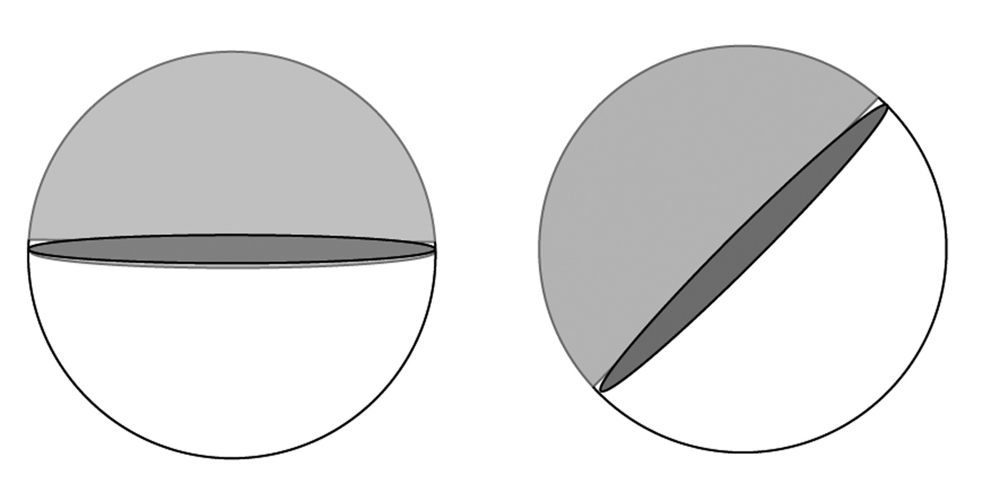
You throw three darts onto the surface of a globe, each
from a randomly chosen direction. What is the probability
that all three darts lie in one hemisphere?
The circles in the diagram each have
radius 1 cm, are tangent to each other and also to the
square PARK. Their centers are on the line PR. Find the
area of the square PARK.
Triangles of many different sizes and shapes can be
created, two of whose sides have lengths 12 and 13 cm
respectively. Which of these triangles has the greatest
area?
A rectangle and a square are inscribed in congruent
circles. The rectangle has a width of 6 and a length
of 8. What is the area of the square?
Three identical, spherical oranges are placed in a bin
as part of a supermarket display. The bin is exactly long
and wide enough to have two oranges fit snugly in the
bottom, but there’s plenty of room to layer oranges above
these two. If the radius of an orange is 2 inches, find the
height of this small stack.
A street has parallel curbs 40 ft apart. A crosswalk
bounded by two parallel stripes crosses the street at an
angle. The length of the curb between the stripes is 15
feet, and each stripe is 50 feet long. Find the distance
between the stripes.
Let A and B be any two points in a plane.
How many different circles can
you draw that go through points A and B? Can you give the
radius of the smallest possible circle? Of the biggest?
How many different rectangles can
you draw with opposite vertices on points A and B?
PQ and QR are diagonals of two faces of a cube. Find the
measure of ∠PQR.
A trapezoid is inscribed in a circle of
radius 5 cm so that one base is a
diameter of the circle, and the other
base has length 5 cm. What is the
perimeter of the trapezoid?
If you start with 12 then add
14, then 18, then
116, and so on, ad infinitum, what do you
suppose the answer would be? Draw a diagram that would
justify your response.
How many sides does a cube have? How about a
pyramid?
Can you build a closed 3-dimensional shape out of 4 flat
sides? How about out of 3 flat sides? Give examples, or
explain why not.
Suppose you have a box that has a base of 1 inch by 5
inches and that stands 8 inches tall. How many ½ inch
radius spherical balls can you get into this box if you
can’t let any ball protrude above the top of the
box?
Craziola, the wacky pizza guy, has decided he wants to
cut a pizza into as many
pieces as possible, with as few straight cuts as possible.
He doesn’t care at all if the pieces are of equal size, he
just wants to make the most number of distinct pieces.
With 1 cut, he produces 2 pieces. With 2 cuts, he creates a
maximum of 4 pieces, no matter how crazy the 2 cuts he
makes are. How many pieces can he possibly make with 3
cuts? 4 cuts? What about n cuts? Can you find the
pattern?
Is it possible to arrange six pencils so that they all
touch each other?
Mr. Shimano gives an extremely difficult Japanese test.
The highest score was 74% and the lowest 31%. Rather than
give a retest, Mr. Shimano decides to raise the 74% to 93%
and the 31% to 61%. For a student who scored 57 on the
original test, what score do you think Mr. Shimano should
give him after the adjustment?
A circle is sitting inside an equilateral
triangle so that it’s tangent to the sides
of the triangle in three places. Another equilateral
triangle is inside the circle
with its three vertices on the circle. If
the length of a side of the smaller triangle is 1 cm, find
the length of a side of the bigger triangle.
Two sides of a triangle measure 6 and 11 cm
respectively. If the length of the third side is also an
integer, what possible lengths can the third side have?
What is the maximum number of acute angles a convex
polygon can have?
A hungry spider and a fly are in a room 30 feet long, 12
feet wide, and 12 feet high. The spider is on one of the
smaller walls, 6 feet from each side and 1 foot from the
ceiling. The fly is on the opposite wall, 6 feet from each
side and 1 foot from the floor. Assume that the fly does
not move (it is paralyzed by fear!) and find the shortest
path that the spider can take to eat the fly.
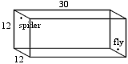
look for patternstinkerdescribevisualizerepresent symbolicallyprovecheck for plausibilitytake things apartconjecturechange or simplify the problemwork backwardsre-examine the problemchange representationscreate
look for patternstinkerdescribevisualizerepresent symbolicallyprovecheck for plausibilitytake things apartconjecturechange or simplify the problemwork backwardsre-examine the problemchange representationscreate
look for patternstinkerdescribevisualizerepresent symbolicallyprovecheck for plausibilitytake things apartconjecturechange or simplify the problemwork backwardsre-examine the problemchange representationscreate
look for patternstinkerdescribevisualizerepresent symbolicallyprovecheck for plausibilitytake things apartconjecturechange or simplify the problemwork backwardsre-examine the problemchange representationscreate
look for patternstinkerdescribevisualizerepresent symbolicallyprovecheck for plausibilitytake things apartconjecturechange or simplify the problemwork backwardsre-examine the problemchange representationscreate
look for patternstinkerdescribevisualizerepresent symbolicallyprovecheck for plausibilitytake things apartconjecturechange or simplify the problemwork backwardsre-examine the problemchange representationscreate
look for patternstinkerdescribevisualizerepresent symbolicallyprovecheck for plausibilitytake things apartconjecturechange or simplify the problemwork backwardsre-examine the problemchange representationscreate
look for patternstinkerdescribevisualizerepresent symbolicallyprovecheck for plausibilitytake things apartconjecturechange or simplify the problemwork backwardsre-examine the problemchange representationscreate
look for patternstinkerdescribevisualizerepresent symbolicallyprovecheck for plausibilitytake things apartconjecturechange or simplify the problemwork backwardsre-examine the problemchange representationscreate
look for patternstinkerdescribevisualizerepresent symbolicallyprovecheck for plausibilitytake things apartconjecturechange or simplify the problemwork backwardsre-examine the problemchange representationscreate
look for patternstinkerdescribevisualizerepresent symbolicallyprovecheck for plausibilitytake things apartconjecturechange or simplify the problemwork backwardsre-examine the problemchange representationscreate
look for patternstinkerdescribevisualizerepresent symbolicallyprovecheck for plausibilitytake things apartconjecturechange or simplify the problemwork backwardsre-examine the problemchange representationscreate
look for patternstinkerdescribevisualizerepresent symbolicallyprovecheck for plausibilitytake things apartconjecturechange or simplify the problemwork backwardsre-examine the problemchange representationscreate
look for patternstinkerdescribevisualizerepresent symbolicallyprovecheck for plausibilitytake things apartconjecturechange or simplify the problemwork backwardsre-examine the problemchange representationscreate
look for patternstinkerdescribevisualizerepresent symbolicallyprovecheck for plausibilitytake things apartconjecturechange or simplify the problemwork backwardsre-examine the problemchange representationscreate
look for patternstinkerdescribevisualizerepresent symbolicallyprovecheck for plausibilitytake things apartconjecturechange or simplify the problemwork backwardsre-examine the problemchange representationscreate
look for patternstinkerdescribevisualizerepresent symbolicallyprovecheck for plausibilitytake things apartconjecturechange or simplify the problemwork backwardsre-examine the problemchange representationscreate
look for patternstinkerdescribevisualizerepresent symbolicallyprovecheck for plausibilitytake things apartconjecturechange or simplify the problemwork backwardsre-examine the problemchange representationscreate
look for patternstinkerdescribevisualizerepresent symbolicallyprovecheck for plausibilitytake things apartconjecturechange or simplify the problemwork backwardsre-examine the problemchange representationscreate
look for patternstinkerdescribevisualizerepresent symbolicallyprovecheck for plausibilitytake things apartconjecturechange or simplify the problemwork backwardsre-examine the problemchange representationscreate
Habits
look for patternstinkerdescribevisualizerepresent symbolicallyprovecheck for plausibilitytake things apartconjecturechange or simplify the problemwork backwardsre-examine the problemchange representationscreate
look for patternstinkerdescribevisualizerepresent symbolicallyprovecheck for plausibilitytake things apartconjecturechange or simplify the problemwork backwardsre-examine the problemchange representationscreate
look for patternstinkerdescribevisualizerepresent symbolicallyprovecheck for plausibilitytake things apartconjecturechange or simplify the problemwork backwardsre-examine the problemchange representationscreate
look for patternstinkerdescribevisualizerepresent symbolicallyprovecheck for plausibilitytake things apartconjecturechange or simplify the problemwork backwardsre-examine the problemchange representationscreate
look for patternstinkerdescribevisualizerepresent symbolicallyprovecheck for plausibilitytake things apartconjecturechange or simplify the problemwork backwardsre-examine the problemchange representationscreate
look for patternstinkerdescribevisualizerepresent symbolicallyprovecheck for plausibilitytake things apartconjecturechange or simplify the problemwork backwardsre-examine the problemchange representationscreate
look for patternstinkerdescribevisualizerepresent symbolicallyprovecheck for plausibilitytake things apartconjecturechange or simplify the problemwork backwardsre-examine the problemchange representationscreate
look for patternstinkerdescribevisualizerepresent symbolicallyprovecheck for plausibilitytake things apartconjecturechange or simplify the problemwork backwardsre-examine the problemchange representationscreate
look for patternstinkerdescribevisualizerepresent symbolicallyprovecheck for plausibilitytake things apartconjecturechange or simplify the problemwork backwardsre-examine the problemchange representationscreate
look for patternstinkerdescribevisualizerepresent symbolicallyprovecheck for plausibilitytake things apartconjecturechange or simplify the problemwork backwardsre-examine the problemchange representationscreate
look for patternstinkerdescribevisualizerepresent symbolicallyprovecheck for plausibilitytake things apartconjecturechange or simplify the problemwork backwardsre-examine the problemchange representationscreate
look for patternstinkerdescribevisualizerepresent symbolicallyprovecheck for plausibilitytake things apartconjecturechange or simplify the problemwork backwardsre-examine the problemchange representationscreate
look for patternstinkerdescribevisualizerepresent symbolicallyprovecheck for plausibilitytake things apartconjecturechange or simplify the problemwork backwardsre-examine the problemchange representationscreate
look for patternstinkerdescribevisualizerepresent symbolicallyprovecheck for plausibilitytake things apartconjecturechange or simplify the problemwork backwardsre-examine the problemchange representationscreate
look for patternstinkerdescribevisualizerepresent symbolicallyprovecheck for plausibilitytake things apartconjecturechange or simplify the problemwork backwardsre-examine the problemchange representationscreate
look for patternstinkerdescribevisualizerepresent symbolicallyprovecheck for plausibilitytake things apartconjecturechange or simplify the problemwork backwardsre-examine the problemchange representationscreate
look for patternstinkerdescribevisualizerepresent symbolicallyprovecheck for plausibilitytake things apartconjecturechange or simplify the problemwork backwardsre-examine the problemchange representationscreate
look for patternstinkerdescribevisualizerepresent symbolicallyprovecheck for plausibilitytake things apartconjecturechange or simplify the problemwork backwardsre-examine the problemchange representationscreate
look for patternstinkerdescribevisualizerepresent symbolicallyprovecheck for plausibilitytake things apartconjecturechange or simplify the problemwork backwardsre-examine the problemchange representationscreate
look for patternstinkerdescribevisualizerepresent symbolicallyprovecheck for plausibilitytake things apartconjecturechange or simplify the problemwork backwardsre-examine the problemchange representationscreate
of Mind
check for plausibility
If you were told by a classmate that taking a cup of
brackish lukewarm water three times a day for a month would
heal your broken leg, you would probably laugh out loud. And
even though your laughter might be a bit more subdued were the
source of that statement the health segment of the evening
news, I bet that you would nonetheless be quite skeptical. On
many levels this would seem to you to be highly implausible,
and so you might either absolutely dismiss it or yield to that
nagging curiosity and check out some other sources.
On the other hand there are a host of other more reasonable
sounding claims that you might be prepared to let slide.
Examples might include the claim that an increase in oil prices
pushes a decline in the Dow Industrial averages, or that there
is a strong correlation between wealth and SAT scores. It
doesn’t seem unreasonable to hold a healthy skepticism for
these as well.
In the context of mathematics, to check for plausibility is
to routinely check the reasonableness of any statement in a
problem or its proposed solution, regardless of whether it
seems true or false on initial impression; to be particularly
skeptical of results that seem contradictory or implausible,
whether the source be peer, teacher, evening news, book,
newspaper, internet or some other; and to look at special and
limiting cases to see if a formula or an argument makes sense
in some easily examined specific situations.
Your classmate proposed traveling 240 miles to the beach
at an average speed of 80 mph, and the next day traveling
home at 40 mph. He pointed out that since you have an average
speed of 60 mph, the total 480 miles there and back takes 8
hours. Yet when you went to the beach, it didn’t take 8 hours
round trip, even though you two drove at precisely the speeds
he had proposed. Why?
It certainly seems at first glance that your classmate is
correct, but just because a result seems superficially correct
doesn’t make it so. When there is an apparent contradiction in
a problem, it often pays to make a quick check or two to see if
what is being said is plausible. For example, how long does
each half of the beach trip take?
Martin says, looking at the figure below, that the entire
rectangle’s area divided by the area of the square inside is
equal to ab+1. Melissa thinks that such a peculiarly
simple answer is unlikely to be correct. Martin insists he’s
right, and that in fact his formula would work for any values
of a and b one might choose. How could Melissa check to see
if Martin’s formula is at least plausibly correct?
One particular way that we check the reasonableness of a
solution to a problem is to examine special and limiting cases.
In the problem above, what would those cases be? Well, one
special case would surely be when a=b, because you could quickly determine the right answer and check if Martin’s formula is correct there. What about if we examined
when “a” was small and “b” was large—say a=1 and b=100, or even a=1 and b=10000? Does Martin’s formula make sense in those
cases as well? Can you come up with another limiting case, and
see if his formula is plausible for that case as well?
Once you have checked a solution for all the limiting cases
you can think of, if it still seems like a reasonable solution,
you might think about how to prove it always works yourself
from first principles. Can you come up with Martin’s
formula?
If one looks at y=x2 on the calculator in “ZOOM SQR” mode (so that the scale in
the x and y directions are the same and the graph looks most
accurate), it appears that the graph is getting so steep, so
quickly, that it will eventually become a vertical line.
Does it? If so, estimate for what x value it becomes
vertical; if not, explain why that can never happen.
While teaching in Brazil, Tony was approached by a fellow
math teacher who said the following: “Hey Tony, do you know
how to prove that all right triangles are similar? I was
trying to show my students in class today and I couldn’t
quite do it.” Could you have helped him out?
On a 3-D blueprint for an Olympic swimming pool, 1 ft.
represents 16 actual feet. In order to determine how much
water would be needed to fill the pool, Tim computes the
volume from the blueprint, which is 4 ft3, and then he
multiplies by the scale factor of 16 to get 64 ft3 of water to
fill the pool. Tim is a little unsure if that is the correct
amount, but it seems right. What do you think?
If Jorge told you that 3.16227765 was an exact solution to x2=10, how could you determine without a
calculator if he is correct, or slightly off?
Hero of Alexandria came up with a formula to determine the
area of any triangle based solely on the lengths of its 3
sides. Below are 4 formulas, all of which purport to be
Hero’s formula. In all 4 formulas, a, b, and c are the
lengths of the sides, and s is the semi-perimeter, which is
equal to half the perimeter.
Area=(s−a)(s−b)(s−c)
Area=√(s)(a)(b)(c)10
Area=√(s)(s−a)(s−b)(s−c)
Area=√3(a+b+c)
Which of these formulas do you think
is the right one? Why?
Try seeing if the formulas give the
kind of answers you would expect for various “common” triangles
you have experience with.
Test to see if “extreme” triangles
(ones with very large or small values of some of the sides)
also give reasonable results.
What units do you typically measure
area in? Does that also help you in deciding which formulas are
most plausible?
Now pick the formula you are most
confident is the right one. Does the fact that it has passed
all your “tests” prove that it is correct? If so, explain why.
If not, explain how you could become convinced that Hero was in
fact correct.
Look at these 6 numbers: 1, 3, 6, 9, 11 and 12. Their mean
is 7. Subtracting the mean from each of the numbers and
adding those together gives us −6+−4+−1+2+4+5, which equals 0. Juniper is unimpressed, and
says that you would always get 0, regardless of the 6 numbers
you chose. Sassafras disagrees, and says it is highly
dependent on choosing the right 6 numbers; for example, in
this case, exactly 3 were above the mean and exactly 3 were
below, and also there were no decimals to complicate matters.
Who is right?
Zargo says that instead of doing lots of intricate
calculations, he can find the area of a rhombus by just
multiplying the diagonal lengths together. See if you can
determine in a minute if his method is plausible.
If you draw a line from the vertex of any triangle to the
midpoint of the opposite side (i.e. the median), will it be
perpendicular to that side, or would it bisect the vertex
angle from which it was drawn?
A pollster interviewed 100 families, and reported that the
mean number of children was 2.037 and the median was 1.8. I
do not believe either of these figures. Do you? Why?
Brian thinks he remembers that the area of a parallelogram
is equal to the product of consecutive sides, but he isn’t
quite sure. You can’t remember whether he’s right either, but
you know you can check his formula to see if it is plausible.
Is it?
Show that the formula for the area of a triangle can be
viewed as just a special case of the area of a
trapezoid.
Which is bigger, 414 or 10110? No calculators allowed! (Hint: try
thinking about limiting cases.)
Hero’s formula gives us a formula for the area of a
triangle based only on the lengths of its 3 sides (see
problem 7 in this lesson). No one has yet come up with a
formula for the area of a quadrilateral based only on the
lengths of its 4 sides. Why do you think that is?
Veneeta graphs y=x2, y=x2+4 and y=x2−10 on the same calculator screen using ZOOM
STD. What does she notice about how their shapes compare to
each other?
Grunchik changes the viewing window
on his calculator so that it graphs x values from -4 to 4,
and y values from -10 to 20. He then graphs the same three
equations that Veneeta graphed. What does he notice about how
their shapes compare to each other?
Veneeta and Grunchik compared their
different answers, but aren’t sure what to make of them. What
do you think?
Prashad says that in a quadrilateral ABCD he has examined,
AB+BC+CD+DA is equal to 1.8 times the diagonal AC. Evaluate
whether what he says is possible or not.
When an object falls under gravity,
its speed increases by a constant amount each second. Two
stones are dropped at the same time from a cliff, but one of
them is 10 feet higher up than the other at the time of
dropping. As they fall, will the distance between them always
be the same?
Later on, two stones are dropped at
the same height from a cliff, but one stone is released one
second before the other. As they fall, will the distance
between them always be the same?
On the same screen as y=x2, graph y=x in ZOOM STANDARD. Then “ZOOM IN” once.
Note that the graph of y=x is “above” the graph of y=x2 for some values of x.
Hermione thinks that those values of x will be the only ones
where y=x is above y=x2. What do you think?
Bart is feeling a little sick. Having recently read about
simpsonitis, a very rare and debilitating disease, and being
somewhat hypochondriacal, he goes to see his physician, Dr.
Kalvakian. The doctor checks him out and decides to
administer a special blood test for detecting the
disease.
This diagnostic test is 98% accurate (returns a positive
result) for people who have simpsonitis and 95% accurate
(returns a negative result) for people who do not have
simpsonitis. Approximately 0.3% of people in the country
actually have this disease.
Unfortunately, several days after taking the blood test, Bart
receives a phone call from Dr. Kalvakian. The doctor tells
him that he tested positive for the disease. Bart asks,
“What’s the chance that I actually have simpsonitis? I mean,
you said that the test was not 100% accurate.” Dr. Kalvakian
replies, “Well, there’s a 98% chance that you have the
disease, Bart.”
Bart initially has a cow, but then he decides to tell the
brainy Lisa what Dr. Kalvakian said. What do you suppose Lisa
told Bart in response?
Zollywog the crazy Geometry student has come up with a
formula for the length of a median in a triangle! He claims
that the length of the median m that bisects side a of a
triangle (with other sides b and c, of course) is:
m=√2b2+2c2−a24.
Could this possibly be true?
Felipe tells Bradley that he has just come up with a cool
fact: a regular polygon of n sides, with distance r from the
middle of the polygon to any one of the vertices, will always
have an area less than 4r2.
Bradley is skeptical of Felipe, since as n increases the area
keeps getting bigger. Can you resolve their dispute?
Jillian says that, for any positive integer x,
420(x+1)!x will always be an
integer. Explain why she is correct.
Lesson 1:
Circular Functions
Introduction
You’ve seen sine, cosine, and tangent before. In fact,
you’ve even used them to find missing sides in triangles.
How would you define the sine of θ ? Cosine of
θ ?
Use careful construction of a triangle to find sin37∘.
Do not use the sine function on your calculator!
Why can’t you use a construction to find sin102∘?
Even though we can’t construct a triangle to find the sine
of 102∘, your
calculator can tell you an approximate value! In this lesson,
we will discover
a new way to think about sine and cosine—a way that makes
calculating the
values of sin102∘, cos1002∘, and tan(−10002∘) possible.
Development
Most of the problems in this section require carefully drawn
diagrams.
A wheel of radius one foot is placed so that its center is
at the origin, and a pin on the rim is at (1, 0). The diagram
below shows the wheel after it has been spun an angle
θ in a counterclockwise direction.
Now consider the function P(θ), which outputs
the
coordinates of the pin after the wheel has been spun an angle
θ in a counterclockwise direction. So, for
example, P(0∘)=(1,0) and P(270∘)=(0,−1).
Find P(θ) when:
θ=90∘
θ=45∘. Give an
exact answer.
θ=30∘. Give an exact
answer.
θ=57∘
θ is some measure between
0∘ and 90∘. (Your answer should be expressed in
terms of θ.)
For values of θ between 0∘ and 90∘, how are cosθ and
P(θ) related?
Now, let’s consider angles greater than 90∘.
Calculate P(150∘), with P being the same
position function as in question 4.
What is P(253∘)?
Compare these values to the sine
and cosine of 150∘ and 253∘.
Using the diagram and your
calculations, what do you think the tangent of 253∘ is? The
tangent of 150∘? Check them on your calculator.
It is the convention for rotations that motion in a
counterclockwise direction
is considered positive, while motion in a clockwise direction
is considered
negative. So if our wheel is spun 57∘ counterclockwise we would
input 57∘
in our function P(θ), as we did in problem 1, but if
our wheel is spun 57∘ clockwise we would input –57∘ in our
function P(θ). So the output for would be the
coordinates of the pin after the wheel is spun 57∘
clockwise.
Find:
P(−240∘). Give an exact
answer.
P(−2640∘). Give an exact
answer.
P(−237∘).
tan(−237∘).
P(−θ), where 0∘<θ<90∘. (Your answer should be
expressed in terms of θ.)
Now define sine, cosine, and tangent of θ for
every value of θ.
For angles between 0 and 90 degrees, is using your
definition in problem 7 equivalent to using your definition
in problem 1? Why or why not?
P(46280∘)=(−0.94,−0.34). Without using the
cosine button on your calculator, find the cosine of
44480∘.
Let cosθ=−0.4.
For how many angles is that
true?
How many of these angles are
between –180∘ and 360∘?
With the help of your calculator
find all the angles in part b.
Assuming that cos80∘=0.17, use the symmetry of
the circle to find cos100∘, cos(−260∘), cos260∘, cos280∘, sin190∘,
and sin(−10∘).
Let’s revisit question 4, but with a wheel of radius 7
feet
instead of 1 foot. The wheel is still centered at (0,0),
and still with a pin at (7,0). Let Q(θ) be the
function which outputs the coordinates of the pin after this
larger wheel has been spun an angle θ in a
counterclockwise direction.
What is Q(48∘)?
What is Q(109∘)?
How would you define sine and
cosine of θ using this Q(θ) function? How
would you define tangent?
How would you define sine, cosine,
and tangent using a circle of radius r?
In the diagram below, there is a circle of radius 2
inches, with radii drawn at 15∘ intervals.
Use careful estimates and the
conclusion of problem 12 to calculate the sines of 30∘,
60∘, 90∘, 120∘, ..., 360∘.
Using your calculations in part a,
sketch a graph with θ on the horizontal axis and
sinθ on the vertical axis. (Use values of θ from −360∘ to 360∘.)
Surprise! There are actually three more trigonometric ratios
(functions) in
addition to the three you already know. Here are their names
and definitions:
Cosecant of angle θ, written cscθ is
defined thus: cscθ=ry
Secant of angle θ, written secθ is
defined thus: secθ=rx.
Cotangent of angle θ, written cotθ is
defined thus: cotθ=xy
Use the unit circle to find cscθ, secθ and cotθ for θ=240∘.
Practice
Use the symmetry of the circle to complete the following
chart. Give exact answers. Copy the chart into your
notebooks.
θ
30°
45°
60°
315°
–210°
210°
–315°
150°
240°
sinθ
cosθ
tanθ
(For this problem use the circle of problem 13.)
Use careful measurements and the
conclusion of problem 7 to calculate the cosines of 30∘, 60∘, 90∘, etc.
Using your calculations in part a,
sketch a graph with θ on the horizontal axis and
cosθ on the vertical axis. (Use values of θ from −360∘ to 360∘.)
Determine, without using your calculator, which of the
following expressions are the same as sin27∘.
Find, without using your calculator, two of the following
expressions which are the same.
sin27∘, cos27∘, sin(−153∘), cos(−153∘), cos63∘
Find at least two values for θ that fit the
equation sinθ∘=√32. How
many such values are there?
Problems
At constant speed, a wheel rotates once counterclockwise
every 8 seconds. The center of the wheel is (0,0) and its
radius is 1 foot. A pin is initially at (1,0). Where is it
69 seconds later?
A wheel whose radius is 1 is placed so that its center is
at (3,2). A pin on the rim is located at (4,2). The
wheel is spun θ degrees in the counterclockwise
direction. Now what are the coordinates of that pin? Does
your answer work for 90 degrees? 180 degrees?
For the following equations use a circle of radius 2 (and
your calculator for part b only) to find all solutions
θ between 0∘ and 360∘:
cosθ=−√32
tanθ=6.3138
sinθ=−√22
cosθ=cos(251∘)
sinθ=sin580∘
(tanθ)2=3
Find all solutions t between 360∘ and 720∘:
cost=sint (no
calculator)
sint=−0.9397
cost<√32 (no calculator)
In the next few problems you are asked to come up with
conjectures or to examine the validity of various statements.
You might want to see if the conclusion reached is even
plausible, by looking at specific, easy-to-check cases. A
simple check will either give the conclusion credence (and thus
makes it worth trying to prove) or disprove it instantly.
Asked to simplify the expression sin(180∘−θ), Alex volunteered the following solution: sin(180∘−θ)=sin180∘−sinθ, and, because
sin180∘ is zero, it follows that sin(180∘−θ) is the same as −sinθ.
Is this conclusion plausible?
If it is plausible, try to prove
the result. If it isn’t, can you come up with a correct
way to express sin(180∘−θ) in simpler
form?
Answer the same questions for cos(180∘−θ).
Find simpler, equivalent expressions for the
following:
sin(180∘+θ), cos(180∘+θ),
tan(180∘+θ), cos(360∘−θ),
sin(360∘−θ), tan(360∘−θ),
cos(360∘+θ), sin(360∘+θ),
tan(180∘−θ), tan(360∘+θ)
Is it the case that sin(90∘−θ)=cosθ ? Explain. Then write simpler, equivalent expressions for
cos(90∘−θ),sin(90∘+θ),cos(90∘+θ).
Is sin(−θ) always the same as
−sin(θ)? What can be said
about cos(−θ)?
Do the following problems
without using a calculator. Explain
your reasoning.
Which is larger: cos311∘ or
cos312∘?
Which is larger: sin311∘ or
sin312∘?
If sinA is known to be 0.96, then what is cosA?
What if it is also known that A is an obtuse angle?
Hendrickson is thinking of an angle θ where tanθ>sinθ, and also where sinθ<cosθ. Give two possible values for θ that
are in different quadrants.
Rodney is running around the circular track x2+y2=10000, whose radius
is 100 meters, at 4 meters per second.
Rodney starts at the point (100,0) and runs in the
counterclockwise direction. After 30 minutes of running, what
are Rodney’s coordinates?
Copyright Phillips Exeter Academy
Below are the graphs of y=cosx and y = 0.7431
(dotted). Given that Q=(42,0.7431), find coordinates for
the intersection points P, R, and S without using a
calculator. Use a calculator to check your answers.
Copyright Phillips Exeter Academy
For how many angles in the first quadrant will sinθ be rational?
You use a circle of radius 2 to find the sine of a 60
degree angle. Find the length of the arc of the circle that
is intercepted by this 60 degree angle.
Choose an angle θ and calculate (cosθ)2+(sinθ)2. Repeat with several other values
of θ. Explain the results. (Note that it is
customary to write cos2θ+sin2θ instead of (cosθ)2+(sinθ)2.)
For any angle θ, is it true that 1+tan2θ=sec2θ ? If so, prove it. If not,
produce a counterexample.
Asked to find an expression that is
equivalent to cos(α+β), Laura responded cos(α)+cos(β). What do you think of Laura’s answer, and why?
On your calculator, draw a graph of the function y=tanx with 0∘<x<360∘. Something appears
to be wrong here. Say what you think is wrong and explain
what’s going on.
Solve the following without finding the angle θ.
Given that sinθ=1213, with 0∘<θ<90∘, find the values of cosθ and tanθ.
Given that cosθ=725, with 270∘<θ<360∘,
find sinθ and tanθ.
Suppose that cscθ=−257 and tanθ<0. Evaluate, in fractional
form, the remaining five trigonometric functions of θ.
The point P(−12,16) is on a
circle whose center is the origin. Find the cosine of angle
θ, the angle between the positive x-axis and the
radius to P.
The point P is on a circle whose
center is the origin, and the x-coordinate of P is five times
its y-coordinate. Find the cosine of angle θ, the
angle between the positive x-axis and the radius to P.
Is it possible for sinθ to be exactly twice the
size of cosθ ? If so, find such an angle θ. If not, explain why not.
Find the three smallest positive solutions to 2sinθ=–1.364.
Don’t use a calculator for this problem.
Reduce: 5ab−10bcab
Reduce: 3x2−243x
Solve for x: 2x2−3x−2=0
Add: 74+3ab
Subtract: x4−x−12
Find all the solutions x, given 0∘≤x≤360∘ .
(cosx−.5)(sinx+√32)=0
(cosx)2−5cosx+4=0
3(tanx)2+5tanx=0
2(sinx)2+sinx=3
Exploring in Depth
Paul rides a Ferris wheel for five minutes. The diameter
of the wheel is 10 meters,
and its center is 6 meters above the ground. Each revolution
of the wheel takes 30 seconds. Being more than 9 meters
above the ground causes Paul to suffer an anxiety attack. For
how many seconds does Paul feel uncomfortable?
Jasper’s bike has wheels that are 27 inches in diameter.
After the front wheel picks up a tack, Jasper rolls another
100 feet and stops. How far above the ground is the tack?
You have a circular dartboard. Its target area is defined
in an unusual way. Take any point within the dartboard. Draw
a straight line that goes through this point and the center
of the board. Measure the angle this line makes with the line
going from the center to the “easternmost” point on the dart
board. If the tangent of this angle is between -0.2 and 0.6,
then the point is shaded. Otherwise, it is not shaded. What
are your chances of hitting this target area?
Given that sinθ=k, and that 0∘<θ<90∘, find expressions for cosθ and
tanθ.
What do the graphs of y=sinx and y=sin2x have in common, and how do they differ? How about the graphs
of y=cosx and y=cosmx, where m is any
positive integer?
Starting at the same spot on a circular track that is 80
meters in diameter, Andy and Brandon run in opposite
directions,
at 300 meters per minute and 240 meters per minute,
respectively. They run for 50 minutes. What distance
separates Andy and Brandon when they finish? Interpret the
word distance any way you wish.
Copyright Phillips Exeter Academy
Lesson 2:
Law Of Sines And Law Of Cosines
Introduction
The Leaning Tower of Pisa
The Leaning Tower of Pisa
has been leaning almost since the onset of construction in
1173. From ground to top, the tower is 183.27 ft along the
lowest side and 186.02 ft along the highest side. The angle of
slant of the tower—formed by its shorter slant height and the
ground—is 95.5∘. An apocryphal tale states that
Galileo Galilei (1564-1642), an Italian physicist,
mathematician, and philosopher, dropped two cannon balls of
different weights from the top of this leaning tower in trying
to demonstrate that the descending speed of a falling body is
independent of its weight.
What is the distance traveled by an object dropped from the
top of the Tower of Pisa, on its lowest side, when it hits the
ground?
What is the horizontal distance from the point where the
object hits the ground to the base of the tower?
The Tower of Pisa first acquired a slant after the third
floor was built in 1178. More recently, in 1990, it was closed
to the public because of safety fears. In fact, the tower was
on the verge of collapse, and it was projected that it would
have collapsed between 2030 and 2040. However, it has been
straightened a bit, but still remains slanted (the tower has
been reopened to the public). Thus, the angle of slant of the
Tower of Pisa, α, has been changing for centuries. The
following is a sketch of the situation.
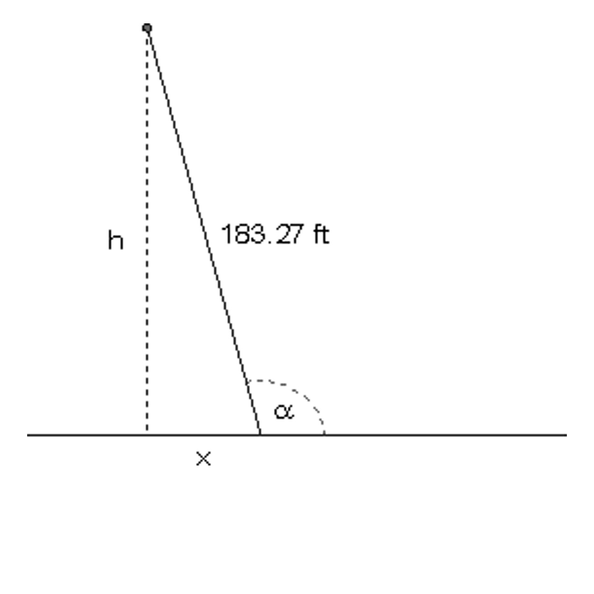
In trying to determine a general expression for the
distance, h, traveled by an object dropped from the top of the
Tower of Pisa’s lowest side when it hits the ground (assuming
that the shorter length of the tower has not changed), Gerald
found the following expression.
h=183.27sinα
For the horizontal
distance from the point where the object hits the ground to the
base of the tower, Gerald found the following expression.
x=−183.27cosα
Do you agree with these
statements? Explain your answer.
You have no more than two seconds after reading the
statement of this problem to solve it.
What is the value of sin2(7√123456π+13)+cos2(7√123456π+13)?
Development
We follow the convention of labeling the angles of a
triangle using capital letters, and the lengths of the
corresponding opposite sides with the corresponding lower-case
letters. For example, we may label A, B, C the angles of the
triangle, and a, b, c the corresponding opposite sides, as in
the figure below.
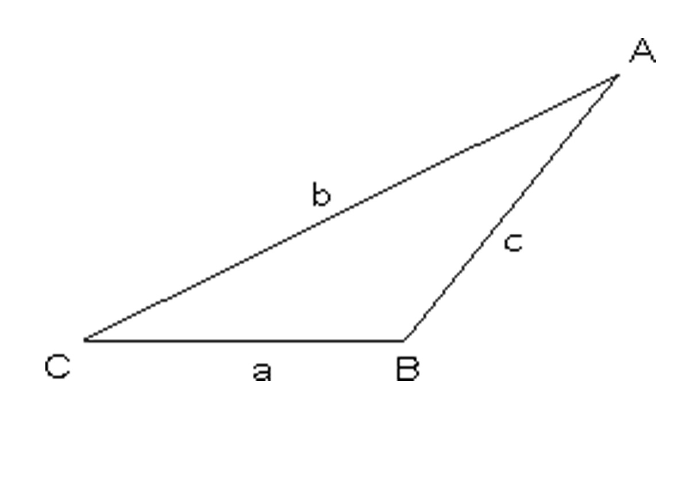
The Bermuda Triangle
The “Bermuda Triangle” or “Devil’s Triangle” is an imaginary
area located off the southeastern Atlantic coast of the United
States of America, which is noted for a supposedly high
incidence of unexplained disappearances of ships and aircraft.
The vertices of the triangle are generally believed to be
Bermuda, Miami (Florida), and San Juan (Puerto Rico.)
One of the amazing stories from this triangle tells that an
aircraft (A in the figure below) was 747.23 miles from the
airport of Miami (M in the figure), on the line joining Miami
and Bermuda, when its crew received an SOS signal from Cyclops
(C in the figure), a ship located at a point on the line
joining Miami airport and San Juan, which was sinking. Flight
controllers at the airport were able to estimate the measure of
∠AMC to be 52∘.
Based on the previous story, Mr. Thomas Howard designed a
problem for his mathematics class. The initial situation
described in the story, however, contained more than the
minimal information required to solve the problem; therefore,
he divided the class into two groups, Group I and Group II, and
gave each group a problem with different pieces of information,
but the same goal to determine how many miles the aircraft had
to travel through the purportedly dangerous Bermuda Triangle
before reaching Cyclops.
Group I: Besides the general information described above, it
is known that m∠C=60∘. What is the distance
between the aircraft A and the sinking ship Cyclops C? Find a
solution to this problem and explain how you arrived at your
answer.
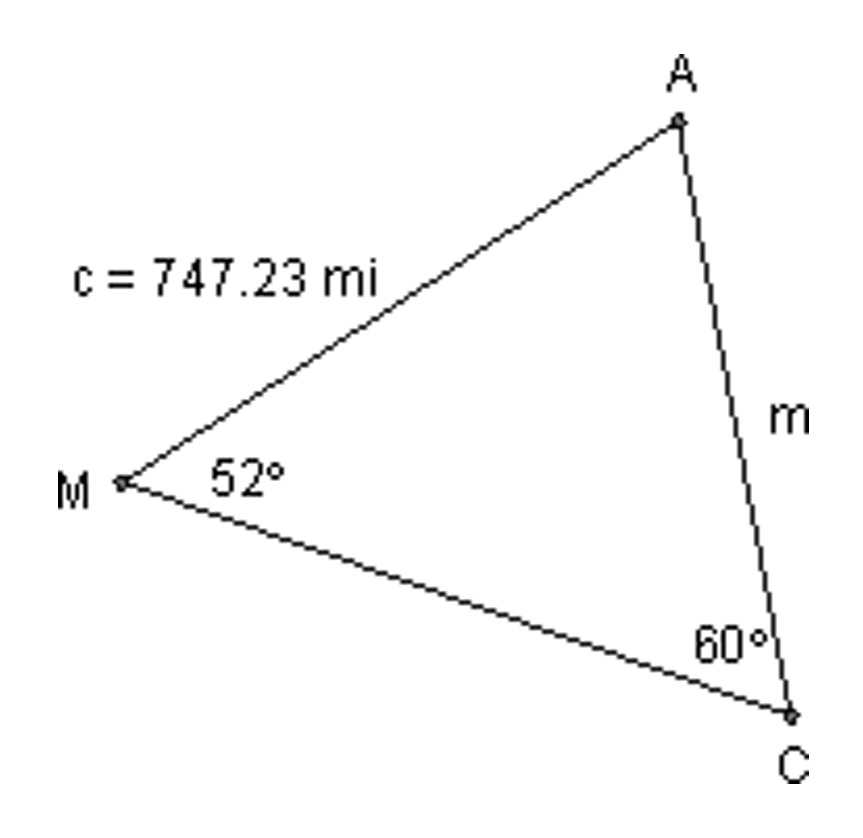
Group II: Besides the original and general information, it
is known that the distance from Cyclops to the airport of Miami
is 800 miles, as shown in the figure below. What is the
distance between the aircraft A and the sinking ship Cyclops C?
Find a solution to this problem and explain how you arrived at
your answer.
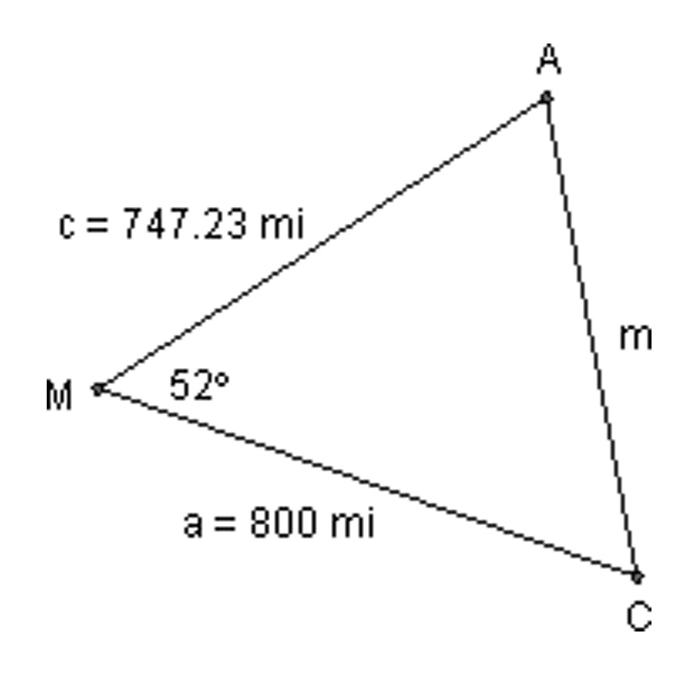
In Problem 5, if the distance given were m and the one to be
found were c, the problem could be solved in a similar way.
Consider the more general triangle below.
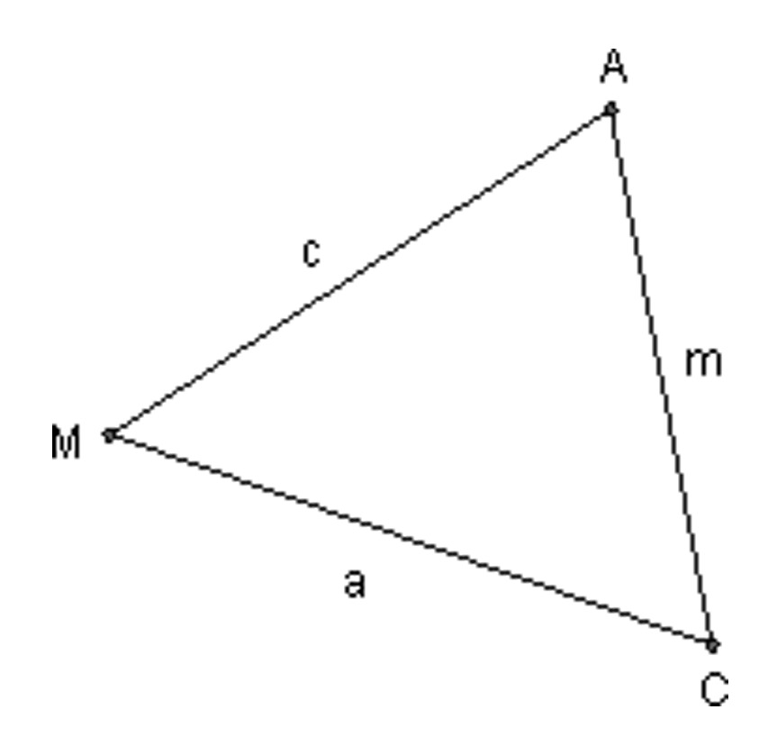
Draw the altitude from A to side
¯¯¯¯¯¯¯¯¯¯MC, and prove that csinC=msinM.
Hint: If h is the length
of the altitude from A to ¯¯¯¯¯¯¯¯¯¯MC, find h in ΔADM in
terms of c and ∠M. Then find sinC in ΔADC.
Now, prove that msinM=asinA
In group II, Rebecca noticed that if the measure of ∠M were 90∘ rather than 52∘, the
Pythagorean Theorem would guarantee that m2=a2+c2. “However,” she said, “since ∠M is less than
90∘, the Pythagorean relationship among m, a, and c
must be adjusted.” This adjustment is the result that you are
about to find in Part c of the following problem.
Consider the triangle in Mr. Howard’s problem in a more
general form, as shown below, and prove the following.
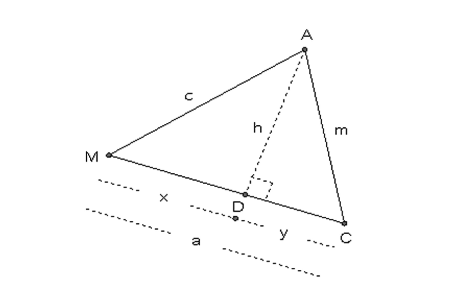
h=csinM
y=a−ccosM
m2=c2sin2M+(a−ccosM)2
In part c of the previous problem, expand the square on
the right side of the equality. Then use the trigonometric
identities that you have learned thus far to find an expression
as simple as possible relating m to c, a, and ∠M.
As announced above, the expression relating m with c, a, and
∠M that you may have found in the previous problem is
the adjustment to the Pythagorean relationship m2=a2+c2 required when m∠M<90∘. In a
similar way, adjustments to the Pythagorean relationship
relating a to m and c as well as to that relating c to a and m
may be needed when either m∠A or m∠C is not
90∘, as in the case illustrated above.
Consider the general triangle shown below.
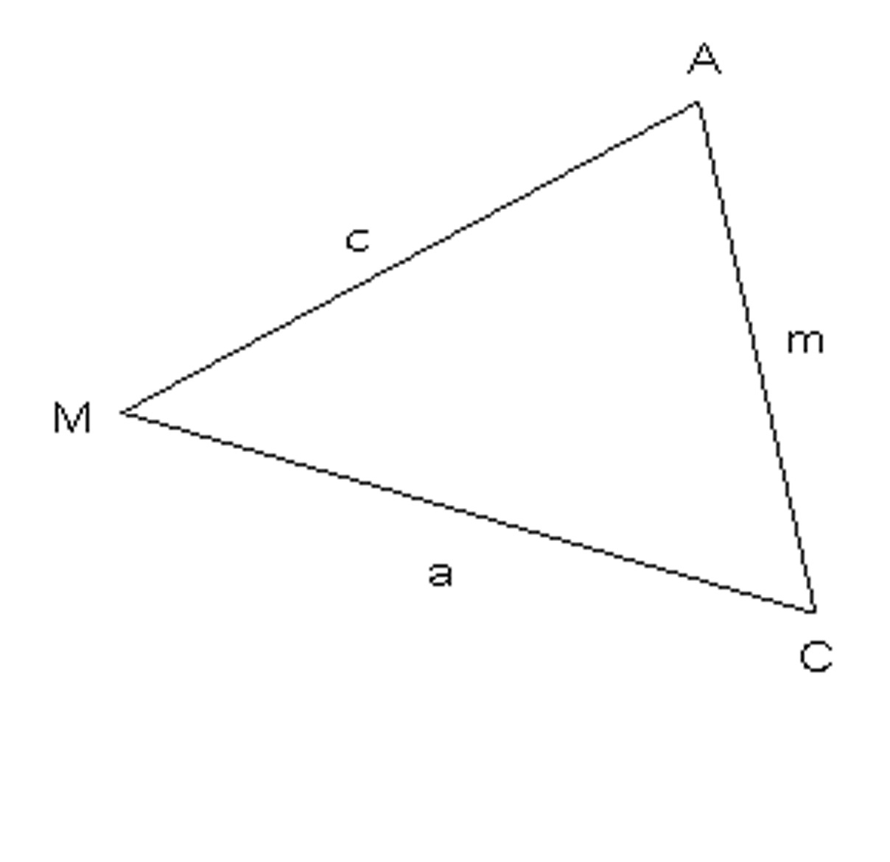
If m∠A=90∘, how
would a be related to m and c?
Conjecture an adjustment to the
Pythagorean relationship in part a that may be required when
m∠A≠90∘. Would the proof of your
conjecture in this case be quite different from that developed
in Problems 8 and 9? Explain.
If we had that m∠C=90∘, how would c be related to a and m?
Conjecture an adjustment to the
Pythagorean relationship in part c that may be required when
m∠C≠90∘. Would the proof of your
conjecture in this case be quite different from that required
in Part b? Explain.
Summarizing, given a triangle as the one below,
two sets of equalities have been found.
On the one hand, the set of equalities that you may have
proven in Problem 7 is known as the Law of Sines.
On the other hand, the set of equalities that you may have
found in Problems 9, 10b, and 10d is known as the Law of
Cosines.
Practice
Find the indicated side lengths or angle measures in the
following figures.
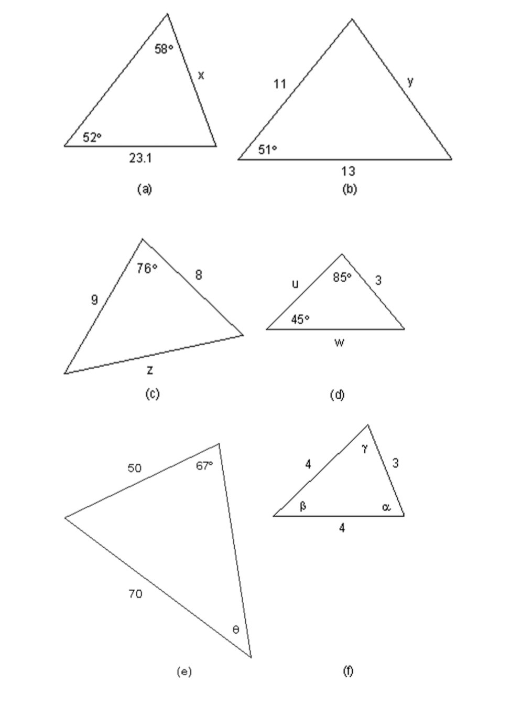
Further Development
When the students in Mr. Howard’s class shared their
findings (the Law of Sines and the Law of Cosines) the
information contained in these laws was considered “the key” to
find missing side lengths or angles in any triangle, when basic
information about the triangle is known. However, in reality in
all the proofs only acute triangles—triangles with each of
their three angles being less than 90∘—were
used.
Regarding Mr. Howard’s problem, consider the following
situation where m∠M=142∘.
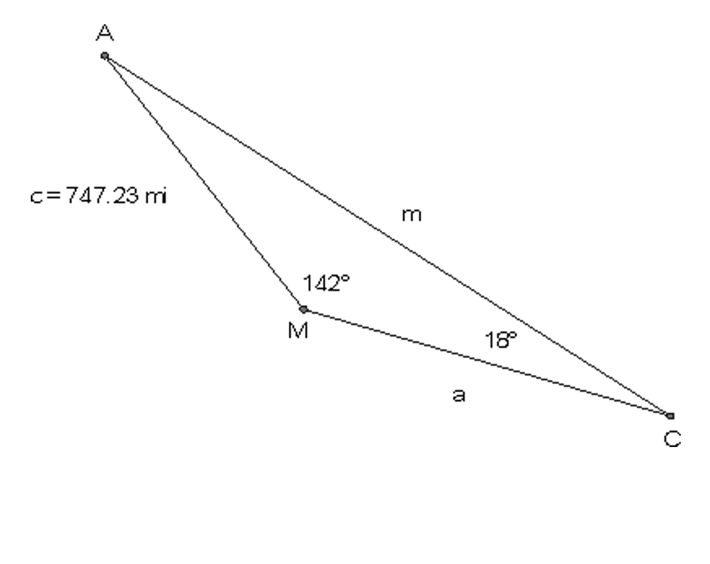
Does the proof of the Law
of Sines (in Problem 7), or that of the Law of Cosines (in
Problems 8 and 9), support the use of either of these laws to
find m in this triangle, which is not an acute triangle?
Explain.
Consider the following obtuse ΔAMC (that is, a triangle
containing an angle greater than 90∘).
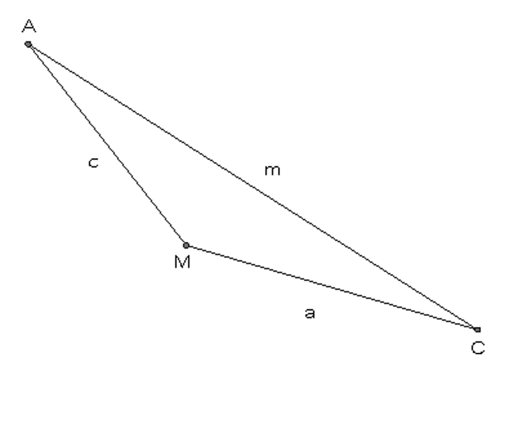
Prove that
csinC=msinM=asinA.
Consider again the obtuse ΔAMC. Dashed lines have been added to
help you prove the equality stated in Part (a).
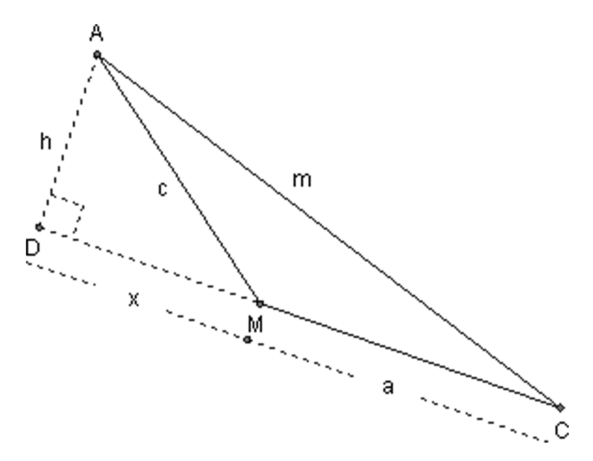
Prove that m2=a2+c2−2accosM.
Prove that a2=m2+c2−2mccosA.
Prove that c2=m2+a2−2macosC.
Is the Law of Sines or the Law of Cosines worth remembering?
Would it be easier always to construct appropriate
perpendicular lines and use only trigonometric ratios to solve
the problems that may require them?
Practice
Find the indicated side lengths or angle measures in the
following figures.
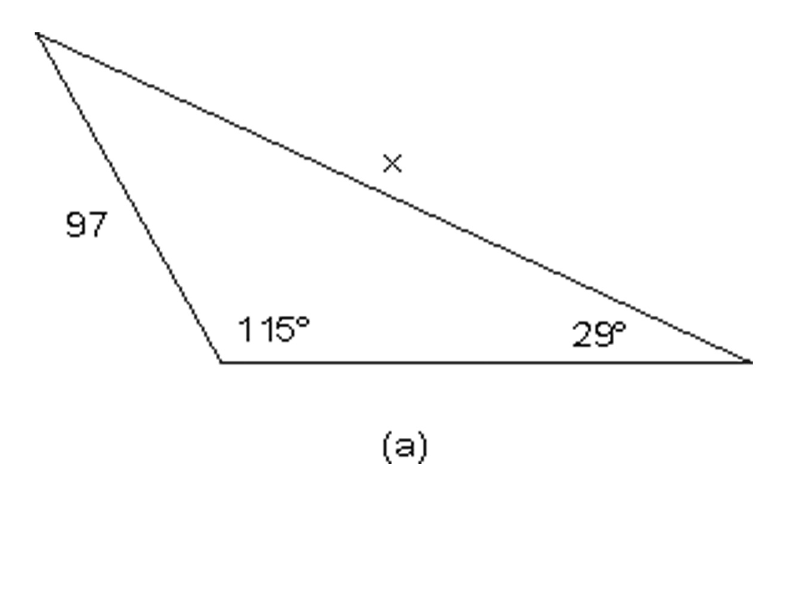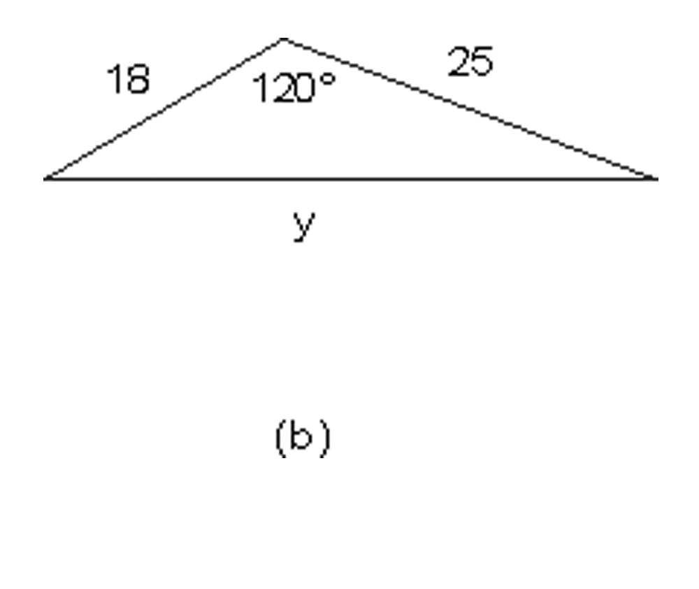
Two tracking stations are monitoring the path of a
satellite, which has passed to the west of both stations. From
station
A, the angle of elevation to the satellite is 85.5 degrees.
From station B, the angle of elevation to the satellite is 82
degrees. Stations A and B are 65 miles apart.
Find the distance from the satellite
to tracking station A.
Find the height of the satellite
above the ground.
The distance from Chicago to St. Louis is 440 km, from
St. Louis to Atlanta 795 km, and from Atlanta to Chicago 950
km. What are the angles in the triangle with these three cities
as vertices?
In the figure below, find the measure of angle A
After having done these problems in the Practice section,
you may be better
prepared to answer question 15, repeated here:
Is the Law of Sines or the Law of Cosines worth remembering?
Would it be easier always to construct appropriate
perpendicular lines and use only trigonometric ratios to solve
the problems that may require them?
Problems
Melissa walks along the path shown below: She goes 500
ft along a sidewalk adjacent to a field, then turns 70
degrees, walks a way across the field, and stops. Looking
back, she measures a 47 degree angle
between her path across the field and her line of sight to
her starting point.
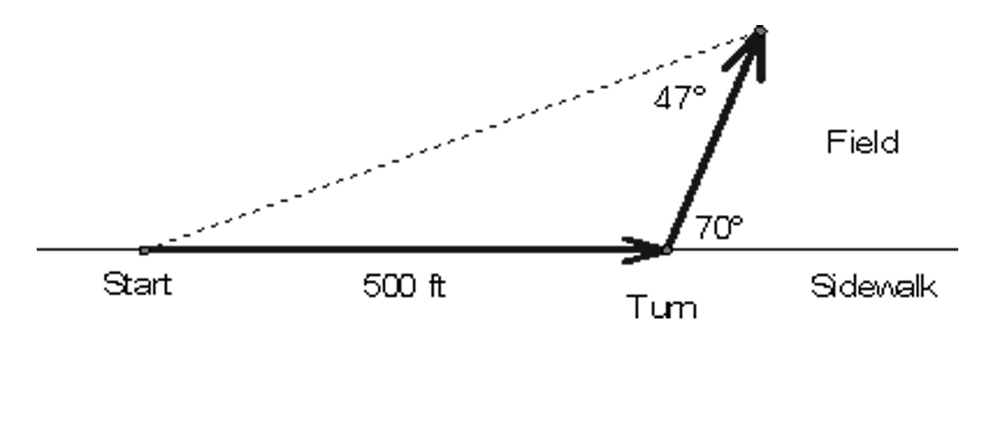
Find the distance that Melissa
walked across the field.
How far away is Melissa from her
starting point?
A sailboat is attempting to sail between two islands,
100 miles apart. From the very beginning, a wind blows the
boat 15 degrees off its course. After the sailboat has been
sailing for an hour and a half at 25 mph, it corrects its
course so it is sailing straight toward the second
island.
By how much does the sailboat need
to increase its speed if it wants to arrive at its
destination at the same time it would have going 25 mph along
the straight path?
Find the “turn angle” – the number
of degrees the sailboat needed to turn in order to correct
its course.
Julie needs to find the distance between two trees A and
B on the opposite side of a river. On her side of the
river, she chooses two points C and D, 35 feet apart. Then
she measures the angles shown in the diagram. What
distance
between the trees will she calculate?
Find all three angles of this triangle. Check to be sure
that your answer is
plausible.
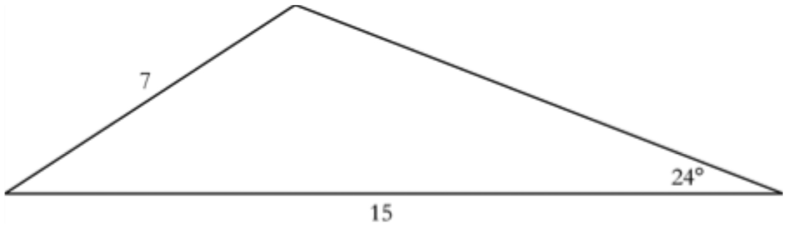
Find the measure of all the angles in the trapezoid.
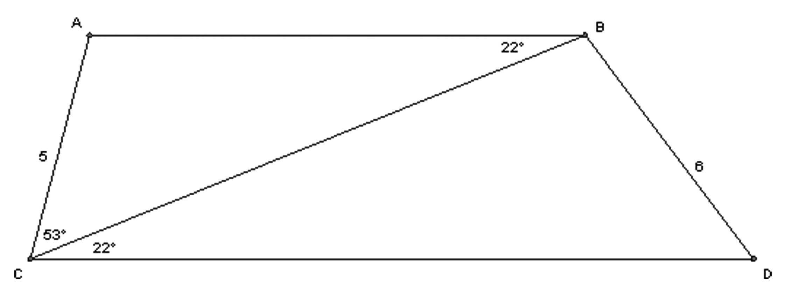
In the figure below, find X.
In the figure below, the length of the chord drawn from
A is 8, and the length of the chord drawn from B is 10.
Find the length of arc AB. (Hint: you will need
to know the radius of the circle.)
The function ThirdSide takes an angle, theta, and
outputs the third side of a
triangle with sides 3 and 4 and included angle theta.
Find Thirdside(80∘).
What are the minimum and
maximum possible values for Thirdside(θ)?
Justify your answer
in two different ways:
by visualizing what different triangles would look like for
different values of θ.
by looking at the Law of Cosines formula and seeing how the value of theta affects the value of each term.
Often times, a problem that seems to be hard may be
simplified a lot by just drawing a diagram or adding a couple
of lines—or even just points—to a diagram already in place.
These additions (to the concrete situation given) are
implemented to visualize and better understand problems which
may have been initially confusing. In the following problems,
29 through 33, you will have the chance to use this
mathematical habit of mind repeatedly.
A triangle has a 13-inch, a 14-inch, and a 15-inch side.
To the nearest tenth of an inch, how long is the median
drawn to the 14-inch side? (Recall that a median is a line
segment drawn from a vertex of a triangle to the midpoint
of the opposite side.)
A “half-regular” pentagon isn’t perfectly regular, but
it does fold perfectly in half (the left half is the same
as the right half – it’s symmetric across a vertical axis).
The half-regular pentagon below has a top angle of 160°, a
side length of 8 for the top two sides, a side length of 9
for the base, and a total height of 14 (from the top point
down to the base).
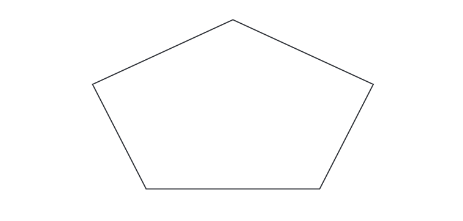
Find the area and
perimeter of the
pentagon.
The diagram below represents a plot of a piece of land.
Find the area of the plot.
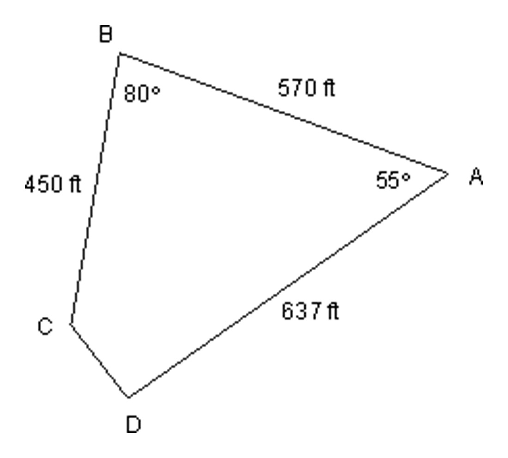
In this diagram, ΔABC and ΔCDF are both
isosceles. AB=AC and DF=DC. ∠E and
∠EFD are right angles.
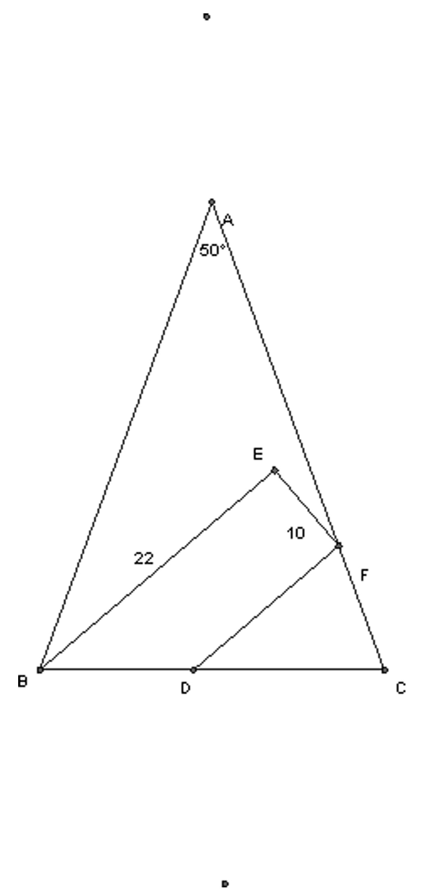
Find all the angles in the
diagram.
Find AF.
The lengths of three sides and the measure of two angles
of a quadrilateral are given, as shown in the figure
below.
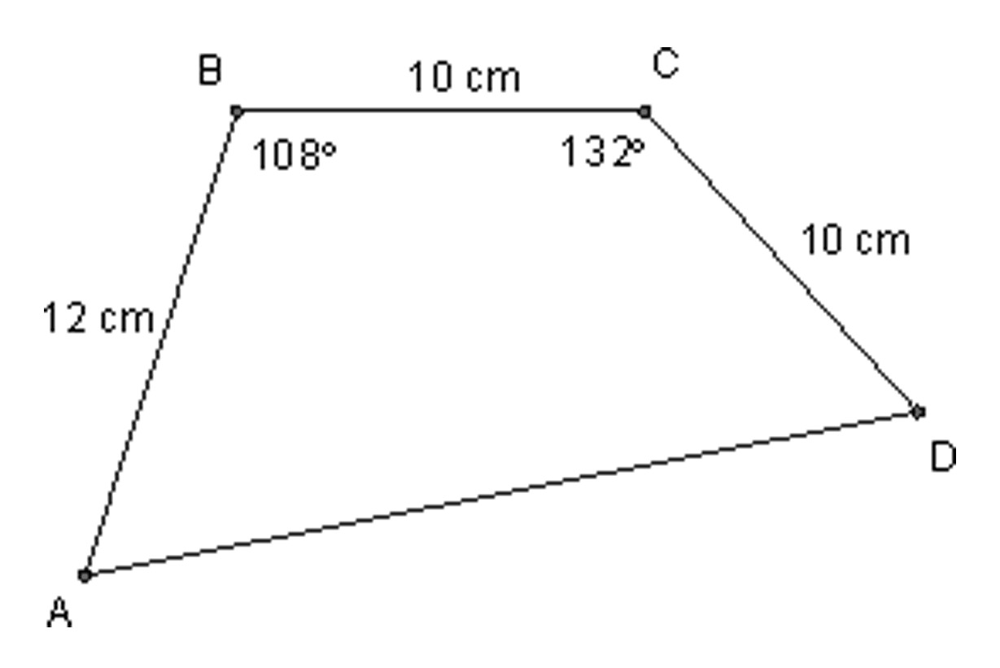
Determine the length of the
diagonals of this quadrilateral. Round answers to two
decimal places.
Determine the perimeter of this
quadrilateral. Round answer to two decimal places.
Determine the area of this
quadrilateral. Round answer to two decimal places.
You’re looking at the hour hand and the minute hand on a
clock at exactly 1:20. The tips of the hands are 3 inches
apart. The hour hand is 2.15 inches long. (Remember – the
hour hand is not pointing directly at the 1, since it’s
after 1:00!)
What’s the angle between the
hands?
Draw the triangle that this
forms, and find the other angles in the triangle.
Find the length of the minute
hand.
A bird sees two worms on the ground. The worms are 23
inches apart. The bird flies at the worm on the left, but
when it’s exactly halfway to the worm, it turns and flies
to the worm on the right. The angles are as marked, and the
angle marked 82∘ refers to the entire angle on the right
side. Find all the other lengths and angles in the diagram
below.
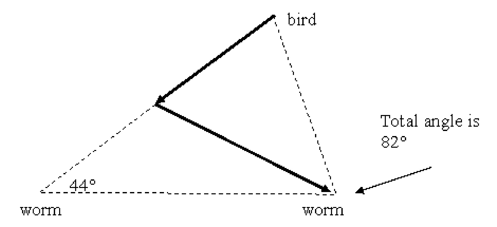
Use the law of cosines to determine the angles in a
triangle that has sides of lengths 7.3, 23.1, and 15.7 .
Why would this problem be easier if the sides were 8.1,
23.9, and 16.2?
In the figure below, find AB.
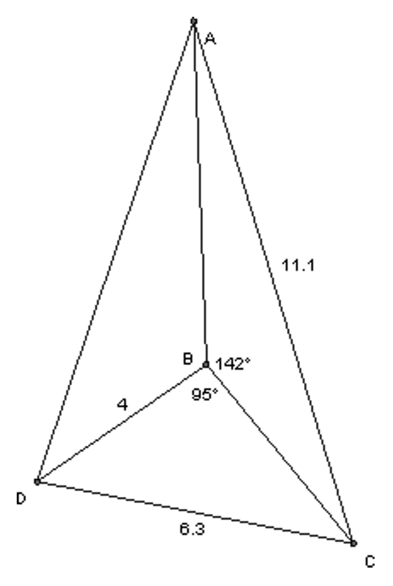
A balloon, B, is tethered to the ground by wires
¯¯¯¯¯¯¯¯AB and ¯¯¯¯¯¯¯¯CB as shown in the
figure below. How high, h, is the balloon above the
ground?
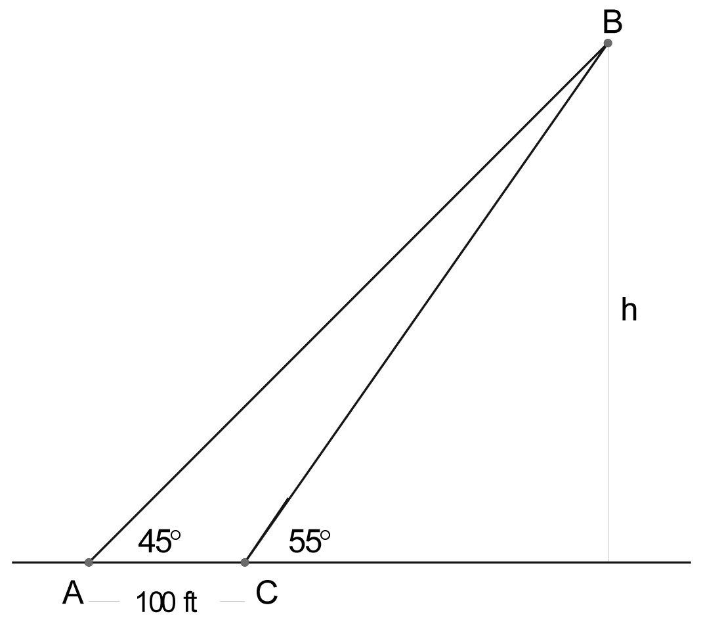
In any triangle ABC, prove that m∠C=cos−1(a2+b2−c22ab).
Exploring in Depth
Borga and Dhaka City are two of the main cities in
Bangladesh. Borga Airport and Dhaka City Airport are 260 km
apart. The ground controllers at Dhaka City monitor planes
within a 100-km radius of the airport.
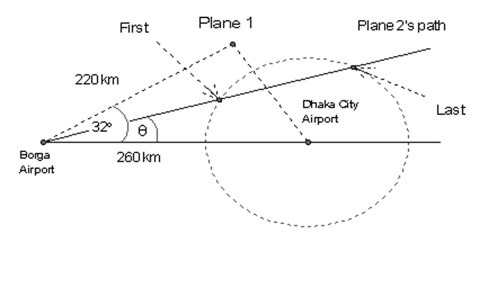
Plane 1 is 220 km from Borga
Airport at an angle of 32∘ to the straight line
between the airports. Is it within the range of Dhaka City
Ground Control?
Plane 2 takes off from Borga
Airport toward Dhaka City Airport at an angle θ with the line between the airports. If θ is small enough, there is a point when Plane 2 first comes
within range of Dhaka City Ground Control, and another
point when it is last within range. Is there a value of
θ for which Plane 2 is within range of Dhaka
City Ground Control at just one point? If so, what is the
magnitude of this angle?
If θ=15∘, how
far will Plane 2 be from Borga Airport when it first comes
within range of Dhaka City Ground Control? How far from
Borga Airport is it when it is last within range?
A triangle has six parts: three sides and three
angles.
If we know only two out of
the
six parts of a triangle, is it enough information to
precisely describe what triangle it is? Explain.
What if we know its three angles?
Is it enough information to precisely describe that
triangle? Explain.
What is the minimal information
about the six parts of a triangle needed to precisely
describe a
triangle?
Don’t use a calculator for this problem.
Reduce: x2y+y2xxy
Reduce: 4x−20y16x+20y
Simplify: (84x5y214x−2y4)−2
Rewrite using fractional
exponents: √3√√x
If a=√b, find a3 in terms of b.
As you may have explained in Problem 41, in general a
triangle is determined by three of its six parts, where at
least one of these parts is a side. These are the
possibilities. Case SAA: when one side and two angles are
known. Case SSA: when two sides and the angle opposite one of
those sides are known. Case SAS: when two sides and the
included angle are known. Case SSS: when the three sides are
known.
In the Case SSA described above, what can we say about a
triangle for which two sides and the angle opposite one of
those sides are known?
Note: Case SSA is known as
the ambiguous case. Are there good reasons for this name?
Find the side lengths and measures of the angles of if
m∠A=43.1∘, a=186.2, and b=248.6.
Find the side lengths and measures of the angles of the angles of ΔABC if m∠A=42∘,
a=70, and b=122.
The Ambiguous Case
In Case SSA, when two
sides and an angle opposite one of those sides are given, it
is possible that none, one, or two triangles may exist
satisfying the given information. These possibilities are
illustrated in the figure below, where ∠A, a,
and b are the angle and two sides given. For each case,
(a) through (d), explain how ∠A, a, and b are related.
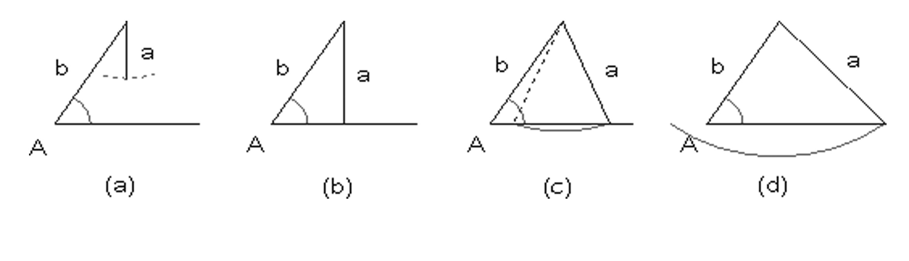
In the figure below, find X.
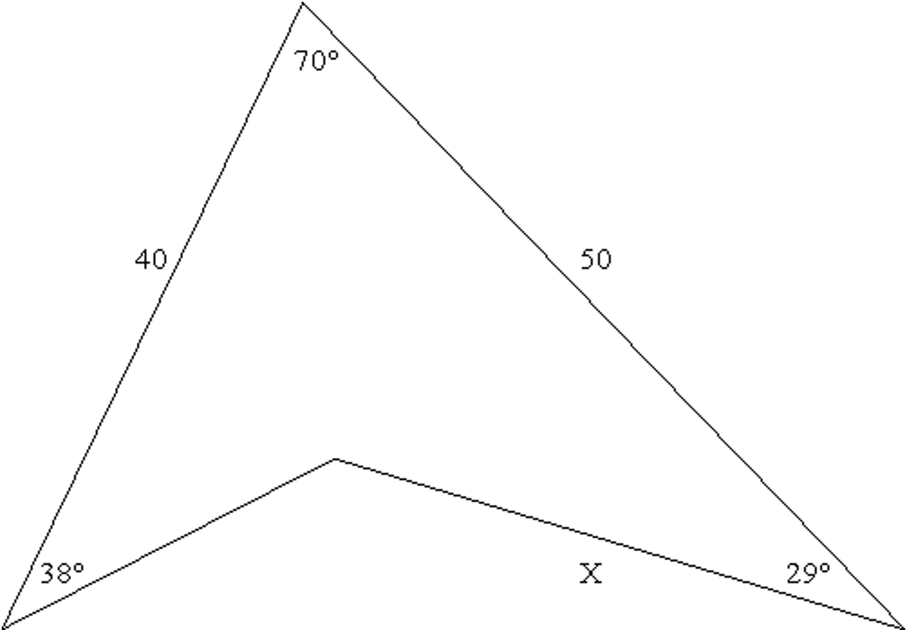
In the figure below, find the lengths of the other two
sides of this quadrilateral.
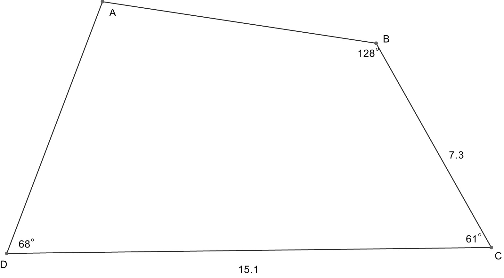
Heron’s Formula
Suppose you have ΔABC .
Prove that its area, A, is given
by A=12absinC
Prove thatA2=14a2b2(1−cosC)(1+cosC)
Use the Law of Cosines to express
cosC in terms of a, b, and c, and from Part b prove
Heron’s Formula: A=√s(s−a)(s−b(s−c),
where s=12(a+b+c) is the
semiperimeter of the triangle.
Lesson 1:
Getting Comfortable With Trig
Introduction
In an earlier lesson, you learned how the trigonometric
functions sine, cosine, and tangent were defined for angles
other than those between 0 and 90 degrees. Here is a quick
refresher.
Imagine sitting at the edge of a merry-go-round with radius
1 meter. You’ve set up a coordinate system with (0,0) at the
center of the merry-go-round, and the point (1,0) is due east
from (0,0). When the wheel starts to turn counterclockwise,
your position is (1,0).
If the merry-go-round has rotated 42∘ from its
starting
position, find the coordinates of your position.
If the merry-go-round has rotated 200∘ from its
starting
position, find the coordinates of your position.
This may be enough to remind you of the generalized
definitions of sine and cosine. In the figure below, a “spoke”
of a circle of radius 1 is drawn so that it makes a central
angle of θ with the positive x-axis. The spoke
intercepts the circle at the point (x,y). The sine of an
angle θ is the y-coordinate of this point. The cosine
of θ is the x-coordinate of this point.
Using the figure above, how would you define the tangent
of θ?
In middle school, you learned that sinθ is
defined as the ratio of the length of the side opposite θ in a right triangle to the length of the hypotenuse. Where is the right triangle in the figure above,
and what are the opposite and hypotenuse?
How would you determine the sine, cosine, and tangent of
an angle using a circle with a different radius than 1?
The circle with radius one is better known in mathematical
circles as the “unit circle.” You’ll want to draw it — or a
circle with a well-chosen radius — almost every time you solve
a trig problem.
Development
Cecilia is on a Ferris wheel and notices that, when she
has rotated about 143 degrees from due east, she is 24 meters
west and 18
meters above the center of the wheel. Use this information
to
approximate the sine, cosine, and tangent of 143 degrees.
Then
see how you did by asking your calculator for these
values.
For each diagram, find the sine and cosine of the angle
θ.
Copy the following 30-60-90 triangle and 45-45-90 triangle
into your notebook. Then write in the remaining angles and
find the remaining sides in terms of x.
Problem 2 may have reminded you that whether the sine or
cosine of an angle is positive or negative depends on which
quadrant the angle is in. This allows you to answer questions
like the following.
Go back to your 30-60-90 and 45-45-90 triangles and think
about positioning them on the unit circle.
Name all angles between 0 and 360
degrees that have a
sine of 12.
Name all angles between 0 and 360
degrees that have a
cosine of 12.
Name all angles between 0 and 360
degrees that have a
tangent of 1.
Now explain how to find all the
angles that have a sine
of 12.
Solve the equation sinθ=12. How many
solutions are there? How many solutions are interestingly
different from one another?
Of course, you might also have to solve equations that don’t
involve sines
or cosines of angles in special triangles. For instance, if you
had to solve sinθ=.2531, you would be forced to
resort to the inverse sine function on
your calculator.
Make sure your calculator is in degree mode, then take the
inverse sine of .2531 to solve this equation.
Draw the “wheel” again, and draw a spoke at the angle that
has sine .2531. Remembering that the sine of an angle is the
height of a point above the x-axis, indicate the other point
on the wheel that would have the same sine.
How would you calculate the size of this second angle with
sine .2531? Do so.
Give all the solutions to the equation sinθ=.2531.
Now find all the solutions to the equation cosθ=.2531.
Practice
A wheel of radius 2 ft spins around the point (0,0).
A ladybug sticker is initially at the point (2,0). Find
the
coordinates of the sticker once the wheel has spun
115∘
220∘
300∘
660∘
Calculate the exact value of each expression. Do not
use
a calculator.
sin120∘
cos(−60∘)
cos315∘
tan150∘
sin270∘
cos0∘
Given that the sine of 138 degrees is about .6691,
Find all angles between 0 and 360 degrees that have a sine of
.6691.
Describe all angles that have a sine
of .6691, including those not between 0 and 360 degrees. Can
you find a way to write your answer using symbols?
Find all solutions to the equation sinθ=.6691.
Find all solutions to the equation 3sinθ−1=1.0074.
Find all solutions between 0∘ and 360∘ to the equation
tanθ=−1√3.
Find all solutions between 0∘ and 360∘ to the equation
cosθ=−.8834.
In which quadrants is the tangent negative? In which
quadrants
is the tangent positive?
Further
Development
You’re used to measuring temperature in degrees Fahrenheit,
but you also know that much of the world measures temperature
using degrees Celsius. Similarly, the world uses miles and
kilometers, ounces and grams, gallons and liters.
When the Babylonians invented degree measure, they chose a
360-degree circle for two reasons. One was that, since there
are 365 days in a year, a degree would be very close to one
day’s progress around the circular path they believed the sun
made every year. Another reason is that 360 is divisible by
lots of numbers, so
we can describe a fourth, a sixth, an eighth, and a tenth of a
circle as an integer number of degrees. (Try this with a 100
degree circle and you’ll see it doesn’t work as well.)
As time went on, though, mathematicians realized that the
number 360 didn’t
really have anything to do with circles, and in fact some of
their calculations would be easier if they used a different
system. This system was inspired by the close relationship
between a central angle of a circle and the arc it intercepts.
It was also inspired by the importance of the unit circle.
Specifically, we’d like the measure of a central angle in
the unit circle to be literally the same as the length of the
arc it intercepts.
What is the circumference of the unit circle?
Since a 360 degree “central angle” intercepts the entire
circle your answer to Problem 24 will be the equivalent of 360
degrees in our new system.
How much of a circle does a 180 degree central angle
intercept? So, in this new system, how should we represent a
180 degree angle?
Under this new system, what should we call the measure of
an angle that intercepts a quarter-circle?
What should we call the measure of an angle that
intercepts
a sixth of a circle?
When you measure angles this way, you are measuring in
radians. (Try pressing the MODE button on your calculator and
notice that there is a radian vs. degree option.) The next
problems suggest a reason for the name.
How many times does the radius of a circle “fit” around
the circumference? (Hint: remember that the circumference of
a circle is C=2πr.)
Say you have an angle that intercepts an arc on the unit
circle equal to two of its radii. How many radians is that
angle?
If you are about to solve an equation like sinθ=√32, you might not
know whether to give your answer in degrees or radians. Your
class should agree on which system to use.
Practice
If 60 degrees is equivalent to π3 radians,
how many radians are in
120 degrees?
240 degrees?
30 degrees?
15 degrees?
Use your answers to the previous problem to help convert
each degree measure to radians.
75 degrees
150 degrees
330 degrees
If 45 degrees is equivalent to π4 radians,
how many degrees
are in
3π4 radians?
7π4 radians?
π radians?
Copy this unit circle into your notebook and write the
radian measure of each angle marked.
Give the exact value of each expression.
sinπ3
cosπ3
sin2π3
cos2π3
tan7π4
cos5π4
Problems
Write each set of values in order of smallest to biggest.
Do not use a calculator.
sin60∘, sin70∘, sin80∘
cos60∘, cos70∘, cos80∘
tan60∘, tan70∘, tan80∘
Write each set of values in order of magnitude (that is,
you would write 2 before –10) and then say which are positive
and which are negative.
sin89∘, cos89∘, tan89∘
sin269∘, cos269∘, tan269∘
sin359∘, cos359∘, tan359∘
Solve each equation for all values of θ.
You may use your calculator, but keep
in mind that it will not give you all the answers you
need.
cosθ=.4642
13sinθ=.2862
2tanθ−4=−3.5174
sin(θ−15∘)=.7327
Solve for all values of x. Give answers to Part a using degrees and answers to Part b using radians.
√2sin(x+45∘)=1
√3tan(x+4)=3
Solve for all values of θ.
tan2θ=3
(√3sinθ+1)(2sinθ−1)=0
Does sin−1x refer to an angle, or just a
number that does not represent an angle? How about sinx?
A wheel on a buggy has a radius of one foot. How many
degrees has it spun counterclockwise if a chalk mark
originally on the wheel’s rightmost point is for the first
time .8 feet off the ground?
Don’t use a calculator for this
problem.
Solve: x4−9x2=0
Solve: 327x2=1
Find the base-ten logs of a
million, a billion, and a million times a billion.
Solve: x+1x+3=14
. Simplify: (x2)6x3
A Ferris wheel has a radius of 132 feet. Its bottom seat
is 6 feet off the ground. You are sitting in the seat at the
wheel’s rightmost point when the wheel begins to spin
counterclockwise.
What is your height off the ground
when the Ferris wheel has rotated 5π4 radians?
What is your height off the ground
when the Ferris wheel has rotated 9π4 radians?
What is your height off the ground
when the Ferris wheel has rotated 13π4 radians?
You have fallen asleep on the
Ferris
wheel. When you wake up, you realize
that you are level with a tower that you know to be 100 feet
off the ground. What are the possibilities
for how many radians the wheel has rotated since the
beginning of the ride?
How many degrees is one radian? How many radians is one
degree?
Come up with a conversion formula
between degrees and radians.
Another way of thinking of radian measure
is as a ratio. In a circle, it is the ratio of the arc an
angle intercepts to the radius
of the circle.
Draw a circle of radius 5 inches,
with an angle inside that intercepts an arc that is
14 the length of the circle. Find the ratio of
the arc length to the radius.
Repeat part a, but using a circle
of radius 7 inches. Your angle will still intercept
14 of the circle.
What is the radian measure of an
angle that intercepts a quarter-circle?
In 10th grade, you found a formula for the length of an
arc intercepted by an angle
θ: arclength =2πr⋅θ360∘. Find a similar formula that
works when the central angle is measured in radians instead
of degrees.
In 10th grade, you also found a formula for the area of
the sector the angle intercepts: sector area =πr2⋅θ360∘. Find a similar formula that
works when the central angle is
measured in radians instead of degrees.
From what we’ve seen in this lesson, there are often two
solutions to the equation cosθ=A between 0∘ and
360∘.
Are there any values of A for which
there would only be one solution? How many values of A?
Are there any values of A for which
there would be no solutions?
Suppose an angle has a sine of .4221.
How many angles have this sine?
Your calculator tells you that
sin−1(.4221)≈24.97∘. Why do you suppose it only gives you one answer?
Try to figure out how the
calculator “chooses” the answers it gives for the inverse
sine button. What’s the biggest answer it will give? What’s
the smallest?
Repeat part c of the previous problem for inverse cosine
and inverse tangent. Why do you suppose the range of answers
is not the same for the sine and cosine?
If 2θ=26∘+360∘n, where n
stands for any integer,
Find all possible values for
θ.
Did your possible values include θ=553∘ ?
If not, revise your
answer to part a.
If 3θ=150∘+360∘n, where n
stands for any integer, find all possible values of θ.
Solve each equation.
sin2θ=.1647
tan2θ+5=42
2sin3θ=√3 (exact
answers)
cos3θ=1√2 (exact answers)
Exploring
in
Depth
Find the coordinates of the point labeled (x,y) in terms of θ. Does the diagram suggest a
certain word origin?
How many solutions does sinnθ=√32 have between 0∘ and 360∘? Answer in terms of n.
Refer back to Problem 46, in which you thought of the
radian measure of an angle as a ratio. Explain why, unlike
degrees, miles, or kilograms, radian measure doesn’t require
.